408 操作系统
第1章 操作系统概述
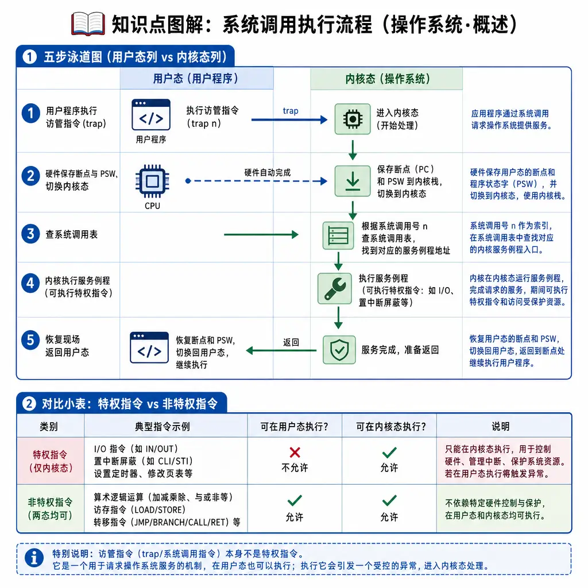
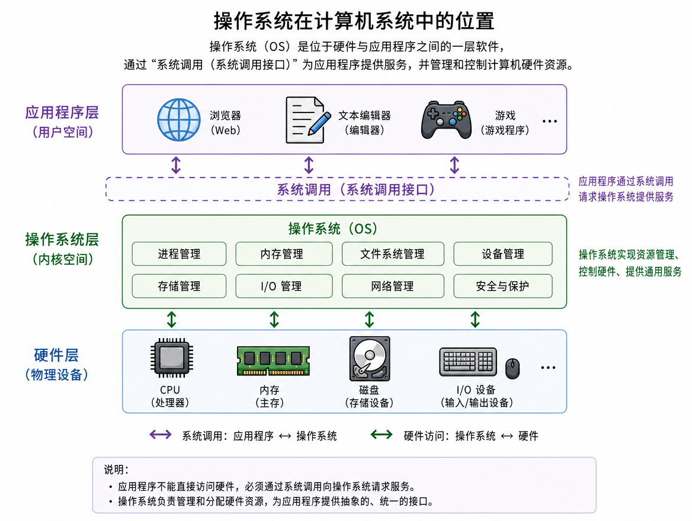
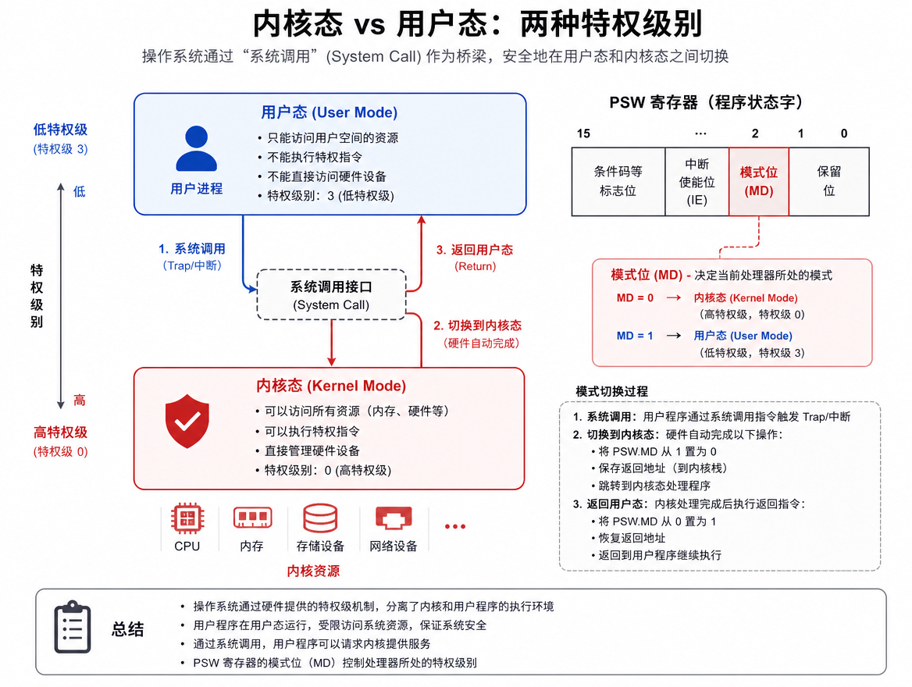
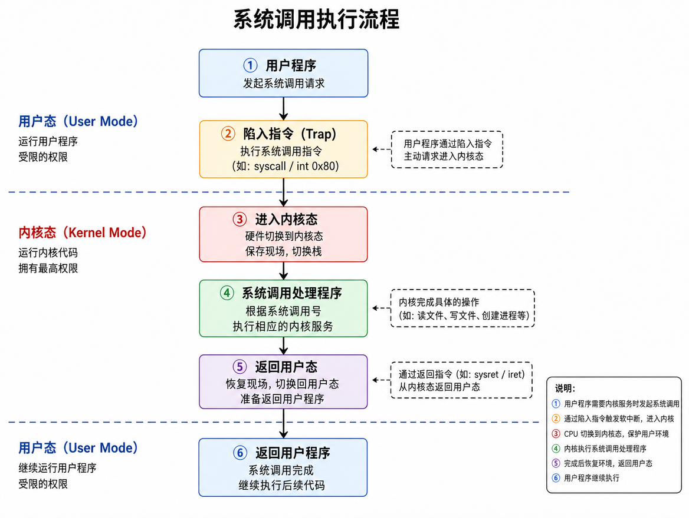
【分值占比】约 2~4 分
【考频】⭐⭐（低频）
【必背】
- 操作系统的四大特征：并发、共享、虚拟、异步
- 操作系统的功能：处理机管理、存储器管理、设备管理、文件管理
- 操作系统接口：命令接口、程序接口（系统调用）、图形接口
- 操作系统发展：批处理、分时、实时、网络、分布式
- 内核态与用户态、特权指令、访管指令、系统调用执行流程
- 中断与异常的分类与处理过程
- 大内核（宏内核）与微内核体系结构对比
【核心概念】
1.1 操作系统特征
并发：两个或多个事件在同一时间间隔内发生（宏观同时，微观交替）。
共享：系统中的资源供多个进程共同使用。 - 互斥共享：一段时间内仅允许一个进程访问（临界资源，如打印机） - 同时共享：一段时间内允许多个进程"同时"访问（宏观同时、微观交替，如磁盘、可重入代码）
虚拟：将一个物理实体变为若干逻辑对应物。 - 时分复用（虚拟处理机、虚拟设备） - 空分复用（虚拟存储器）
异步：进程的执行走走停停，不可预知速度，但运行环境相同时结果确定。
1.2 内核态与用户态、系统调用
指令集划分：CPU指令按执行权限分为两类。 - 特权指令：只能在内核态执行，如I/O指令、置中断屏蔽指令、存取特殊寄存器指令（如修改页表基址寄存器）。 - 非特权指令：用户态和内核态均可执行，如算术运算、访存、转移指令。
两种处理器状态：CPU用程序状态字寄存器（PSW）中的标志位区分。 - 内核态（核心态/管态）：可执行全部指令、使用全部资源，操作系统内核运行在内核态。 - 用户态（目态）：只能执行非特权指令，用户程序运行在用户态。
访管指令与系统调用： - 系统调用（广义指令）：操作系统提供给用户程序使用内核功能的程序接口（如fork、read、write）。凡是与资源有关的操作（存储分配、I/O传输、文件管理），用户程序都必须通过系统调用向内核提出请求，由内核代为完成。 - 访管指令（trap指令）：用户程序中用于陷入内核、请求系统服务的指令。访管指令本身不是特权指令，可在用户态执行；执行后产生trap（陷入）异常，CPU随之切换为内核态。
系统调用执行流程： 1. 用户程序执行访管指令（trap），并传入系统调用号及参数（经寄存器或内存块传递） 2. CPU响应trap异常：硬件保存断点和PSW，切换到内核态 3. 进入系统调用总入口程序，按调用号查系统调用表，转到相应服务例程 4. 内核执行服务例程（此时可执行特权指令） 5. 执行完毕恢复现场，切换回用户态，返回断点继续执行
💡 技巧：凡是"与资源有关、必须内核代办"的操作（创建进程、读写文件、I/O），都要走系统调用；而取数、运算、跳转等纯用户操作不需要。
1.3 中断与异常
中断（外中断）：来自CPU执行指令以外的事件，与当前指令无关（异步）。 - I/O中断 - 时钟中断 - 外部信号
异常（内中断/陷入）：来自CPU执行指令内部的事件，与当前指令相关（同步）。 - trap（陷入，有意为之，如系统调用） - fault（故障，可恢复错误，如缺页） - abort（终止，不可恢复错误，如控制器故障）
处理过程： 1. 关中断 2. 保存断点和程序状态 3. 识别中断源（查询中断向量表） 4. 转向中断服务程序 5. 开中断、执行中断服务 6. 关中断、恢复现场 7. 开中断、返回
1.4 大内核与微内核
| 对比项 | 大内核（宏内核/单内核） | 微内核 |
|---|---|---|
| 内核内容 | 进程管理、存储管理、设备管理、文件管理等全部主要功能 | 只保留最基本功能：低级存储管理、中断与陷入处理、进程通信、低级进程调度 |
| 服务运行位置 | 全部在内核态 | 多数服务移到用户态"服务器"进程 |
| 通信方式 | 内核内函数调用，直接高效 | 用户态服务间经消息传递（IPC），开销大 |
| 性能 | 高（无频繁态切换） | 较低（消息传递+用户态/内核态切换开销） |
| 可靠性/安全性 | 差，一个模块出错可能拖垮全系统 | 好，服务在用户态互不影响 |
| 可扩展性/可移植性 | 差，修改需重编译内核 | 好，服务可动态增删 |
| 典型系统 | UNIX、Linux | Mach、Windows NT（混合内核） |
⚠️ 易错警示：微内核的"小"指内核小，不是系统功能少——被移出的功能以用户态服务器形式存在，系统调用次数反而可能更多。
【易错警示】
- ⚠️ 并发 ≠ 并行，并发是同一时间间隔内交替执行，并行是同一时刻真正同时执行
- ⚠️ 中断是外中断（异步，与当前指令无关），异常是内中断（同步，与当前指令相关）
- ⚠️ 系统调用是主动触发的异常（trap），不是中断
- ⚠️ 用户态到内核态的唯一途径是中断和异常；系统调用属于trap类异常，三者不是并列关系
- ⚠️ 特权指令只能在内核态执行；访管指令本身不是特权指令
【真题速查】
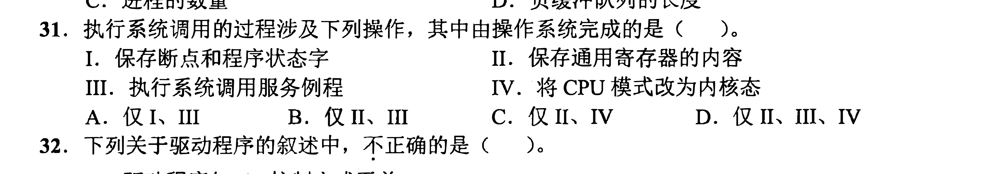
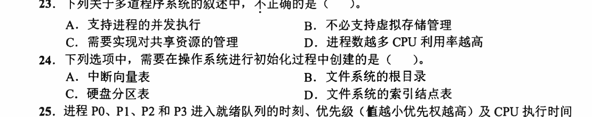
| 年份 | 题号 | 考点 |
|---|---|---|
| 2023 | 选择题 | 系统调用的执行过程与库函数区别 |
| 2022 | 选择题 | 内核态与用户态的切换时机 |
| 2021 | 选择题 | 中断与异常（内中断/外中断）辨析 |
| 历年 | 选择题 | 操作系统接口：命令接口与程序接口 |
逐题真题：先阅读上方知识点，再按年份展开下列原题；每道题均已对应本章节知识点。


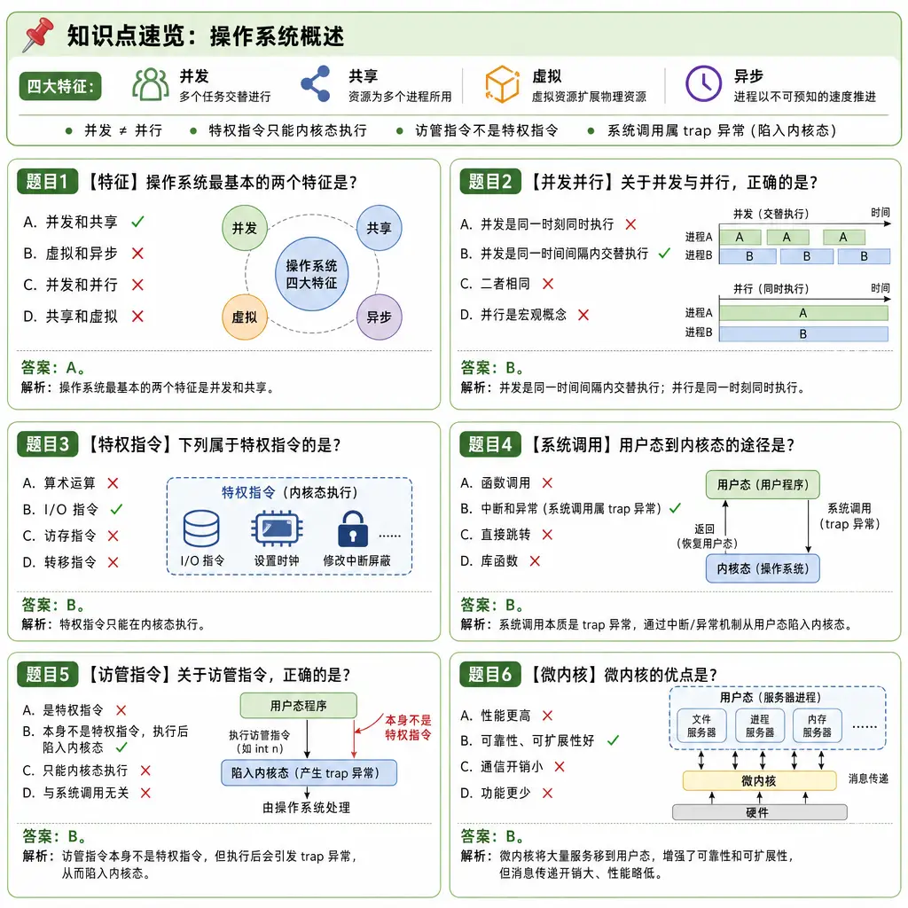
（考点归类供参考，具体题号以历年原卷为准）
第2章 进程管理
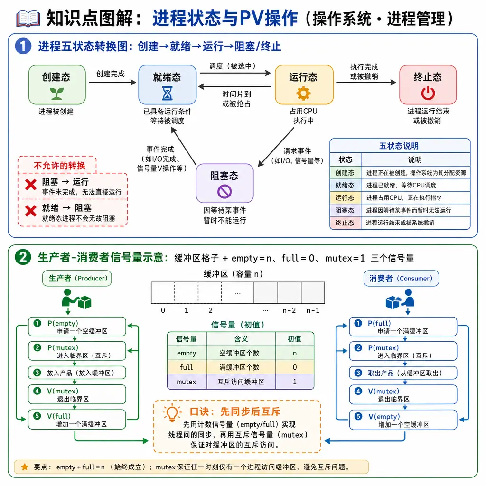
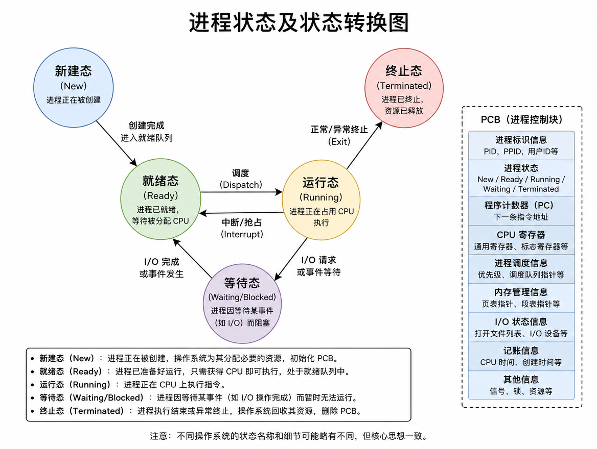
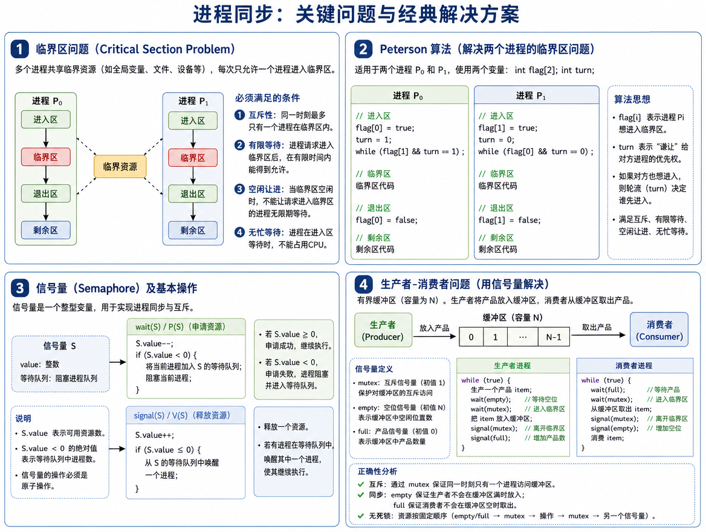
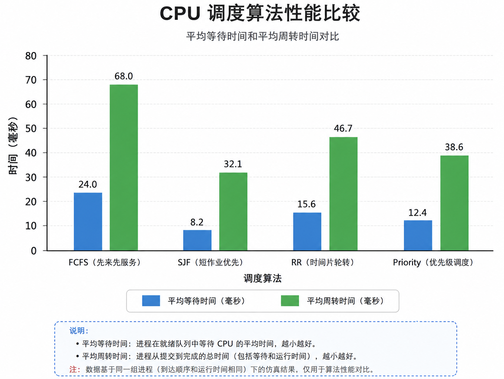
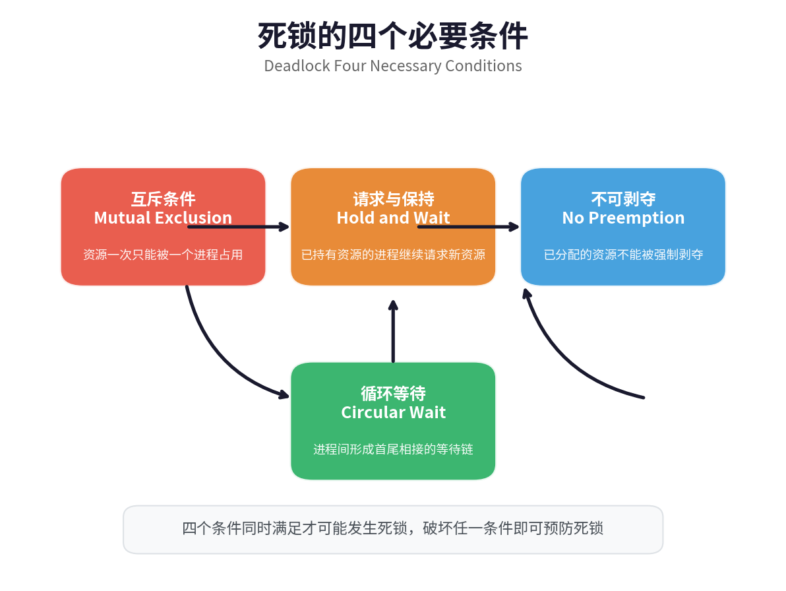
【分值占比】约 8~14 分
【考频】⭐⭐⭐⭐⭐（最高频，大题重灾区）
【必背】
- 进程与线程的概念、区别、状态转换、进程控制原语
- 进程控制块（PCB）的内容
- 进程同步：临界区、互斥、信号量机制、管程
- 经典同步问题：生产者-消费者、读者-写者、哲学家进餐、吸烟者
- 进程通信：共享存储、消息传递、管道
- 处理机调度算法：FCFS、SJF、HRRN、优先级、RR、多级反馈队列（含周转/带权周转时间计算）
- 死锁：条件、预防、避免、检测与解除、银行家算法（含安全性检查与资源请求演算）
【核心概念】
2.1 进程与线程
进程：程序的一次执行过程，是系统进行资源分配的基本单位。
⚠️ 易错警示：引入线程后，进程仍是资源分配的基本单位，但线程才是调度和分派的基本单位。老教材"进程既是资源分配又是调度的基本单位"的说法仅适用于未引入线程的系统，答题按新口径写。
进程特征： - 动态性：创建→执行→消亡（进程最基本的特征） - 并发性：多个进程同时存在 - 独立性：独立资源、独立调度 - 异步性：执行速度不可预知 - 结构性：PCB + 程序段 + 数据段
进程状态与转换：五种基本状态——创建、就绪、运行、阻塞、终止。五条转换边及触发条件：
- 创建 → 就绪：进程创建完成，资源分配完毕，进入就绪队列
- 就绪 → 运行：被进程调度程序选中，分得CPU
- 运行 → 就绪：时间片用完，或被更高优先级进程抢占（被动让出CPU）
- 运行 → 阻塞：进程主动等待某事件（请求I/O、等待资源、P操作失败），是主动行为
- 阻塞 → 就绪：等待的事件完成（如I/O完成、V操作唤醒），是被动行为，由其他进程或中断处理完成
⚠️ 易错警示：不存在"就绪→阻塞"（没被调度运行就不会等待事件）和"阻塞→运行"（阻塞解除后只能先回就绪队列）两条边。
- 就绪：具备运行条件，等待CPU
- 运行：正在CPU上执行
- 阻塞（等待/睡眠）：等待某事件，即使CPU空闲也不能运行
挂起状态：进程被换出到外存（对换区），暂时不参与内存调度。 - 就绪挂起：进程在外存，只要调入内存即可运行 - 阻塞挂起：进程在外存且仍在等待某事件；事件完成后转为就绪挂起（不是直接回内存）
挂起 vs 阻塞：
| 对比项 | 阻塞 | 挂起 |
|---|---|---|
| 原因 | 等待某事件（I/O、信号量），进程自身行为 | 系统（或用户）为调节负载主动换出，外界行为 |
| 所在位置 | 仍在内存 | 已换出到外存 |
| 内存占用 | 仍占内存 | 释放内存 |
| 恢复条件 | 等待的事件完成 | 由中级调度换入（阻塞挂起还需事件先完成） |
进程控制原语：原语执行具有原子性（不可中断，用关/开中断实现），包括创建、终止、阻塞、唤醒、切换。
| 原语 | 主要步骤 | 引起事件 |
|---|---|---|
| 创建 | 申请空白PCB → 分配资源 → 初始化PCB → 插入就绪队列 | 用户登录、作业调度、提供服务、应用请求 |
| 终止 | 读PCB状态 → 若在运行则终止并置调度标志 → 终止子孙进程 → 归还资源 → 撤销PCB | 正常结束、异常结束、外界干预 |
| 阻塞 | 找到PCB → 保护现场、置阻塞态 → 插入相应事件等待队列 | 请求资源失败、等待I/O（主动行为） |
| 唤醒 | 在等待队列中找到PCB → 移出 → 置就绪态 → 插入就绪队列 | 等待的事件完成（被动行为，由合作进程执行） |
| 切换 | 保存运行进程上下文到PCB → 更新PCB → 移入相应队列 → 选新进程 → 恢复其上下文 | 时间片到、抢占、阻塞 |
进程控制块（PCB）： - 进程标识符PID - 处理机状态（通用寄存器、程序计数器PC、程序状态字PSW） - 进程调度信息（状态、优先级） - 进程控制信息（程序和数据地址） - 资源分配清单 - 链接指针
线程：引入线程后，线程是CPU调度和分派的基本单位，是进程内的一个执行单元。
线程分类： - 用户级线程（ULT）：由线程库管理，内核不可见，切换不需内核态、开销小；但一个线程阻塞会导致整个进程阻塞，不能利用多核 - 内核级线程（KLT）：由内核管理，可利用多核，一线程阻塞不影响同进程其他线程；但切换需陷入内核，开销较大 - 组合方式：多对一、一对一、多对多模型
进程 vs 线程：
| 特性 | 进程 | 线程 |
|---|---|---|
| 资源分配 | 是资源分配的基本单位，拥有独立资源 | 基本不拥有资源，共享所属进程资源 |
| 调度 | 引入线程后不再是调度基本单位 | 是调度和分派的基本单位 |
| 切换开销 | 大（需切换地址空间/页表） | 小（共享地址空间） |
| 通信 | 需IPC机制 | 可直接读写共享变量 |
| 并发性 | 进程间并发 | 同一进程内线程间也能并发 |
| 安全性 | 一个崩溃一般不影响其他进程 | 一个崩溃可能导致整个进程崩溃 |
2.2 进程同步
临界资源：一次仅允许一个进程访问的资源。
临界区：访问临界资源的代码段。结构：进入区→临界区→退出区→剩余区。
同步原则（互斥条件）： 1. 空闲让进：临界区空闲时，允许请求进入 2. 忙则等待：临界区被占用时，其他进程等待 3. 有限等待：不能无限等待（防饥饿） 4. 让权等待：不能进入时应释放CPU（可选；硬件方法与Peterson算法不满足，信号量满足）
Peterson算法（软件方法）：
// 两个进程P0, P1
bool flag[2] = {false, false};
int turn = 0;
// 进程Pi的进入区
flag[i] = true; // 表示自己想进
turn = j; // 再谦让：让对方优先
while (flag[j] && turn == j); // 对方想进且轮到对方 → 等待
// 临界区
flag[i] = false; // 退出区：撤销意愿
硬件方法： - 中断屏蔽：简单，但限制CPU交替执行程序的能力，且把关中断权交给用户不安全 - 测试并设置（TSL/TestAndSet） - 交换指令（Swap/XCHG）
⚠️ 易错警示：Peterson算法与硬件方法均不满足"让权等待"（等待时忙等空转，仍占CPU）。
信号量机制（重点）：
由Dijkstra提出，信号量S是一个整型变量（记录型信号量含value与等待队列L）。
// P操作（wait/down/proberen）
void P(Semaphore &S) {
S.value--;
if (S.value < 0) {
// 将进程加入S的等待队列
block(S.L);
}
}
// V操作（signal/up/verhogen）
void V(Semaphore &S) {
S.value++;
if (S.value <= 0) {
// 从S的等待队列唤醒一个进程
wakeup(S.L);
}
}
信号量初值含义： - 互斥信号量：初值为1 - 同步信号量：初值为资源数量
管程（Monitor）：
- 定义：管程是由一组共享数据结构（资源）及在这些数据上操作的一组过程组成的资源管理模块。共享资源及其操作被封装在管程内，进程只能通过调用管程的过程访问资源；任何时刻管程中至多只有一个活跃进程，由编译器负责保证互斥进入，程序员不必再自行安排PV。
- 组成：管程名；局部于管程的共享数据结构说明；对该数据结构操作的一组过程；设置初值的语句。
- 条件变量（condition variable）：用于管程内的同步。条件变量x上仅有两个操作：
- x.wait()：调用进程阻塞，挂入x的等待队列，并释放管程（让其他进程可进入）
- x.signal()：唤醒x等待队列上的一个进程；若队列为空，则什么也不做
- ⚠️ 易错警示：管程中条件变量的wait总是阻塞调用者，signal在队列为空时无效果——与信号量不同（P未必阻塞，V总会使value加1）。
管程 vs 信号量：
| 对比项 | 信号量机制 | 管程 |
|---|---|---|
| 互斥保证 | 程序员自行安排P/V，分散在各进程中，易错 | 编译器保证任一时刻至多一个进程在管程内 |
| 同步手段 | P/V原语，调用顺序要求严格 | 条件变量的wait/signal |
| 出错风险 | 漏写、错序PV即可能死锁 | 只需正确使用条件变量，不易错 |
| 实现者 | 程序员手工编码 | 由语言/编译器支持的程序结构 |
2.3 经典同步问题
🔑 口诀：先同步后互斥 —— 检查资源量的P操作（同步信号量）一定放在互斥锁mutex的P操作之前，否则可能死锁；V操作顺序无关。
1. 生产者-消费者问题：
Semaphore mutex = 1; // 互斥访问缓冲区
Semaphore empty = n; // 空缓冲区数量
Semaphore full = 0; // 满缓冲区数量
// 生产者
void Producer() {
while (true) {
生产一个产品;
P(empty); // 有空位吗？
P(mutex); // 进入临界区
放入缓冲区;
V(mutex); // 退出临界区
V(full); // 满位+1
}
}
// 消费者
void Consumer() {
while (true) {
P(full); // 有产品吗？
P(mutex); // 进入临界区
从缓冲区取出;
V(mutex); // 退出临界区
V(empty); // 空位+1
消费产品;
}
}
⚠️ 易错警示：P操作顺序不能颠倒！必须先P(empty/full)再P(mutex)，否则可能死锁。
2. 读者-写者问题：
Semaphore rw = 1; // 读写互斥
Semaphore mutex = 1; // 保护readcount
int readcount = 0; // 读者数量
// 读者
void Reader() {
while (true) {
P(mutex);
readcount++;
if (readcount == 1) P(rw); // 第一个读者负责加锁
V(mutex);
读数据;
P(mutex);
readcount--;
if (readcount == 0) V(rw); // 最后一个读者负责解锁
V(mutex);
}
}
// 写者
void Writer() {
while (true) {
P(rw);
写数据;
V(rw);
}
}
⚠️ 易错警示：此解读者优先，写者可能饥饿；若要求写者优先（公平），需再加信号量拦后续读者。
3. 哲学家进餐问题：
5个哲学家围坐，5根筷子，每人需同时拿到左右两根才能进餐。若5人同时拿起左手边筷子，则循环等待→死锁。
解决方案（破坏循环等待）： - 最多允许4人同时拿筷子 - 奇数号先左后右、偶数号先右后左（非对称） - 仅当两根筷子都可用时才一次拿起（AND型信号量）
【例】方案一"最多4人同时拿筷子"完整代码：
Semaphore chopstick[5] = {1, 1, 1, 1, 1};
Semaphore max4 = 4; // 至多4位哲学家同时竞争筷子
void Philosopher(int i) {
while (true) {
思考;
P(max4); // 先拿"进餐许可"，破坏循环等待
P(chopstick[i]); // 左手筷子
P(chopstick[(i+1)%5]); // 右手筷子
进餐;
V(chopstick[i]);
V(chopstick[(i+1)%5]);
V(max4);
}
}
4. 吸烟者问题：
三个吸烟者各持有一种无限量材料（1号有烟草、2号有纸、3号有胶水），卷烟需三种材料齐全。供应者每次随机放两种材料到桌上，缺这两种材料的吸烟者取走卷烟抽掉，然后通知供应者放下一组。本质是"单生产者—多消费者"，缓冲区大小为1。
Semaphore offer1 = 0; // 桌上组合1：纸+胶水（给持烟草的1号）
Semaphore offer2 = 0; // 桌上组合2：烟草+胶水（给持纸的2号）
Semaphore offer3 = 0; // 桌上组合3：烟草+纸（给持胶水的3号）
Semaphore finish = 0; // 抽烟完成信号
int i = 0;
// 供应者
void Provider() {
while (true) {
if (i == 0) { 放纸和胶水到桌上; V(offer1); }
else if (i == 1) { 放烟草和胶水到桌上; V(offer2); }
else { 放烟草和纸到桌上; V(offer3); }
i = (i + 1) % 3;
P(finish); // 等吸烟者抽完，再放下一组
}
}
// 吸烟者1号（有烟草，缺纸和胶水）；2号、3号对称
void Smoker1() {
while (true) {
P(offer1); // 等自己缺的组合
从桌上取走纸和胶水;
卷成烟，抽掉;
V(finish); // 通知供应者：本次吸烟完成
}
}
💡 技巧：缓冲区容量为1且不同消费者取不同组合，用三个同步信号量区分"消费者身份"，因此不需要mutex；若多生产者向同一缓冲区放同类物品，则必须加mutex。
2.4 进程通信
低级通信：PV操作，交换信息量少。
高级通信： 1. 共享存储：共享内存区域，需同步机制 2. 消息传递： - 直接通信：send(P, message), receive(Q, message) - 间接通信：通过信箱 3. 管道通信：pipe，单向字节流，FIFO 4. 套接字（Socket）：网络通信
2.5 处理机调度
调度层次： - 高级调度（作业调度）：从后备队列选作业进入内存 - 中级调度（内存调度）：进程换入换出（与挂起状态配合） - 低级调度（进程调度）：从就绪队列选进程分配CPU
调度方式： - 非抢占式：进程自愿放弃CPU（运行完毕或阻塞） - 抢占式：可被强制剥夺（时间片到、优先级更高、有紧急任务）
调度算法：
| 算法 | 思想 | 优点 | 缺点 |
|---|---|---|---|
| FCFS | 先来先服务 | 简单、公平 | 对短作业不利（护航效应） |
| SJF | 短作业优先 | 平均等待/周转时间最小 | 需预测运行时间、长作业可能饥饿 |
| 优先级 | 按优先级调度 | 灵活 | 低优先级可能饥饿 |
| RR | 时间片轮转 | 响应快、公平 | 时间片选取难 |
| HRRN | 高响应比优先 | 兼顾长短作业 | 每次需计算响应比 |
| 多级反馈队列 | 动态调整优先级 | 兼顾长短作业、不需预估运行时间 | 实现复杂 |
多级反馈队列调度算法（机制必背）： 1. 设置多个就绪队列，优先级逐级降低、时间片逐级增大（如q=1,2,4,8） 2. 新进程先进入第1级队列，各级队列内按FCFS排队 3. 进程在本级时间片内未完成，则降到下一级队列队尾；最后一级按RR循环 4. 仅当第1~k-1级队列均为空时，才调度第k级队列 5. 高优先级队列有新进程到达时可抢占当前运行的低优先级进程，被抢占者放回原队列队尾
💡 技巧：答题关键词——"逐级降优先级、逐级加大时间片、新进程从最高级进、被抢占回原队列尾"。短作业很快在高优先级完成，长作业沉底后也能轮到大时间片，不会饿死。
响应比：
$$R_p = \frac{\text{等待时间} + \text{要求服务时间}}{\text{要求服务时间}} = 1 + \frac{\text{等待时间}}{\text{要求服务时间}}$$
周转时间：$T = \text{完成时间} - \text{到达时间}$
带权周转时间：
$$W = \frac{T}{\text{运行时间}}$$
【例】调度算法对比计算：4个进程的到达时间与运行时间如下（单位ms）：
| 进程 | 到达时间 | 运行时间 |
|---|---|---|
| P1 | 0 | 7 |
| P2 | 2 | 4 |
| P3 | 4 | 1 |
| P4 | 5 | 4 |
(1) FCFS（顺序 P1→P2→P3→P4）：
| 进程 | 完成时间 | 周转时间 | 带权周转时间 |
|---|---|---|---|
| P1 | 7 | 7 | 1.00 |
| P2 | 11 | 9 | 2.25 |
| P3 | 12 | 8 | 8.00 |
| P4 | 16 | 11 | 2.75 |
平均周转时间 $=(7+9+8+11)/4 = 8.75$；平均带权周转时间 $=(1.00+2.25+8.00+2.75)/4 = 3.50$。
(2) SJF（非抢占）：t=0只有P1，运行至7；t=7时P2(4)、P3(1)、P4(4)均到达，选最短的P3→8；t=8时P2、P4同为4，按FCFS选先到的P2→12；P4→16。执行顺序 P1→P3→P2→P4：
| 进程 | 完成时间 | 周转时间 | 带权周转时间 |
|---|---|---|---|
| P1 | 7 | 7 | 1.00 |
| P3 | 8 | 4 | 4.00 |
| P2 | 12 | 10 | 2.50 |
| P4 | 16 | 11 | 2.75 |
平均周转时间 $=(7+4+10+11)/4 = 8.00$；平均带权周转时间 $=(1.00+4.00+2.50+2.75)/4 = 2.56$。
(3) RR（时间片q=2）：新到达进程插入就绪队列队尾，时间片用完的进程回队尾（同一时刻先排新到者）。甘特图：
| P1 | P2 | P1 | P3 | P2 | P4 | P1 | P4 | P1 |
0 2 4 6 7 9 11 13 15 16
| 进程 | 完成时间 | 周转时间 | 带权周转时间 |
|---|---|---|---|
| P1 | 16 | 16 | 2.29 |
| P2 | 9 | 7 | 1.75 |
| P3 | 7 | 3 | 3.00 |
| P4 | 15 | 10 | 2.50 |
平均周转时间 $=(16+7+3+10)/4 = 9.00$；平均带权周转时间 $\approx (2.29+1.75+3.00+2.50)/4 \approx 2.38$。
⚠️ 易错警示：① RR中"新到达者入队尾"与"被抢占者回队尾"的先后顺序影响结果，以题目约定为准；② 带权周转时间 $=$ 周转时间 $/$ 运行时间，不是除以等待时间；③ 平均周转时间小不代表响应快（RR响应快但周转可能更大）。
2.6 死锁
死锁定义：多个进程因竞争资源而互相等待，若无外力作用则永远等待。
死锁四个必要条件（同时满足）： 1. 互斥条件：资源互斥使用 2. 不剥夺条件：资源只能主动释放 3. 请求和保持条件：持有资源的同时请求新资源 4. 循环等待条件：存在进程-资源的循环等待链
死锁 vs 饥饿：
| 对比项 | 死锁 | 饥饿 |
|---|---|---|
| 定义 | 循环等待对方占有的资源，相关进程都推不动 | 长期得不到资源/调度，自己推不动但系统在推进 |
| 涉及进程 | 至少两个，且都占有资源 | 可以只有一个，且可能不占任何资源 |
| 进程状态 | 均处于阻塞态 | 可能阻塞（等资源）也可能就绪（等CPU） |
| 发生原因 | 资源竞争 + 推进顺序非法 | 调度策略歧视（纯SJF、纯优先级） |
| 系统整体 | 至少有死锁进程组停摆 | 其他进程可正常推进 |
死锁处理策略：
- 死锁预防：破坏四个必要条件之一
- 破坏互斥：某些资源可共享（如SPOOLing）
- 破坏不剥夺：申请不到时释放已占资源
- 破坏请求和保持：一次性申请所有资源
-
破坏循环等待：资源按序申请
-
死锁避免：动态检查，不让系统进入不安全状态
-
银行家算法
-
死锁检测与解除：允许死锁发生，检测后解除
- 资源分配图法（资源分配图不可完全简化 → 死锁）
- 解除：剥夺资源、撤销/终止进程、进程回退
银行家算法：
数据结构： - Available：可用资源向量 - Max：最大需求矩阵 - Allocation：已分配矩阵 - Need：需求矩阵，$Need = Max - Allocation$
安全性算法： 1. Work = Available，Finish = false 2. 找满足 $Need_i \leq Work$ 且 $Finish[i] = false$ 的进程 3. Work = Work + Allocation_i，Finish[i] = true 4. 重复2-3，若所有Finish为true则安全，此时找出的序列即安全序列
资源请求算法： 1. 检查 $Request_i \leq Need_i$，否则出错（申请超过声明的最大需求） 2. 检查 $Request_i \leq Available$，否则等待（资源不足） 3. 试分配：Available -= Request，Allocation += Request，Need -= Request 4. 执行安全性算法，若安全则正式分配，否则恢复原状、进程等待
【例】银行家算法完整演算：系统有A、B、C三类资源共(10, 5, 7)，T0时刻5个进程情况如下，Available = (3, 3, 2)：
| 进程 | Max | Allocation | Need |
|---|---|---|---|
| P0 | 7 5 3 | 0 1 0 | 7 4 3 |
| P1 | 3 2 2 | 2 0 0 | 1 2 2 |
| P2 | 9 0 2 | 3 0 2 | 6 0 0 |
| P3 | 2 2 2 | 2 1 1 | 0 1 1 |
| P4 | 4 3 3 | 0 0 2 | 4 3 1 |
(1) T0时刻安全性检查（Work从Available=(3,3,2)开始）：
| 步骤 | 选中进程 | Need ≤ Work? | Work（释放后） |
|---|---|---|---|
| 1 | P1 | (1,2,2)≤(3,3,2) ✓ | (3,3,2)+(2,0,0)=(5,3,2) |
| 2 | P3 | (0,1,1)≤(5,3,2) ✓ | (5,3,2)+(2,1,1)=(7,4,3) |
| 3 | P4 | (4,3,1)≤(7,4,3) ✓ | (7,4,3)+(0,0,2)=(7,4,5) |
| 4 | P0 | (7,4,3)≤(7,4,5) ✓ | (7,4,5)+(0,1,0)=(7,5,5) |
| 5 | P2 | (6,0,0)≤(7,5,5) ✓ | (7,5,5)+(3,0,2)=(10,5,7) |
全部Finish=true，存在安全序列 ⟨P1, P3, P4, P0, P2⟩，T0时刻系统安全（安全序列不唯一）。
(2) P1发出请求 Request₁=(1,0,2)： - 检查：$Request_1=(1,0,2) \leq Need_1=(1,2,2)$ ✓；$Request_1 \leq Available=(3,3,2)$ ✓ - 试分配：Available=(2,3,0)，Allocation₁=(3,0,2)，Need₁=(0,2,0) - 再查安全性：P1(0,2,0)≤(2,3,0) → Work=(5,3,2)；P3 → (7,4,3)；P4 → (7,4,5)；P0 → (7,5,5)；P2 → (10,5,7)。存在安全序列 ⟨P1, P3, P4, P0, P2⟩，可以分配。
(3) 此后P4请求 Request₄=(3,3,0)：$Request_4 \leq Need_4=(4,3,1)$ ✓，但 $Request_4=(3,3,0) > Available=(2,3,0)$（A类资源不足）→ P4等待。
(4) 若P0请求 Request₀=(0,2,0)：试分配后Available=(2,1,0)，Need₀=(7,2,3)。逐进程检查，没有任何进程的Need满足 ≤(2,1,0)（如P1(0,2,0)中B类2>1，P3(0,1,1)中C类1>0）→ 无安全序列，系统进入不安全状态，拒绝分配，P0等待，恢复试分配前的状态。
⚠️ 易错警示：不安全状态 ≠ 死锁。不安全只是"可能"死锁（进程可能不发出最大申请），死锁一定处于不安全状态。
【易错警示】
- ⚠️ 信号量的P/V操作是原语，不可中断
- ⚠️ P操作顺序很重要，生产者-消费者中必须先P(empty)再P(mutex)（🔑先同步后互斥）
- ⚠️ 互斥信号量初值为1，同步信号量初值为资源数
- ⚠️ 死锁四个条件必须同时满足，破坏任一即可预防
- ⚠️ 银行家算法是避免死锁，不是预防死锁
- ⚠️ 不安全状态不一定死锁，但死锁一定在不安全状态
- ⚠️ 时间片轮转中，时间片太大→退化为FCFS，太小→切换开销大
【真题速查】
| 年份 | 考点归类 |
|---|---|
| 2024 | 信号量与PV操作、调度算法、进程同步大题 |
| 2023 | 死锁判定、银行家算法、进程管理大题 |
| 2022 | 经典同步问题、调度计算、进程管理大题 |
| 2021 | 信号量机制、死锁预防、进程管理大题 |
| 2020 | 哲学家进餐、调度算法、进程管理大题 |
| 2019 | PV操作、银行家算法、进程管理大题 |
逐题真题：先阅读上方知识点，再按年份展开下列原题；每道题均已对应本章节知识点。
- 2024 年第 24 题 · 进程终止：原题与逐题解析 ↗
- 2024 年第 25 题 · 进程切换现场：原题与逐题解析 ↗
- 2024 年第 28 题 · 线程资源：原题与逐题解析 ↗
- 2024 年第 30 题 · 时间片轮转：原题与逐题解析 ↗


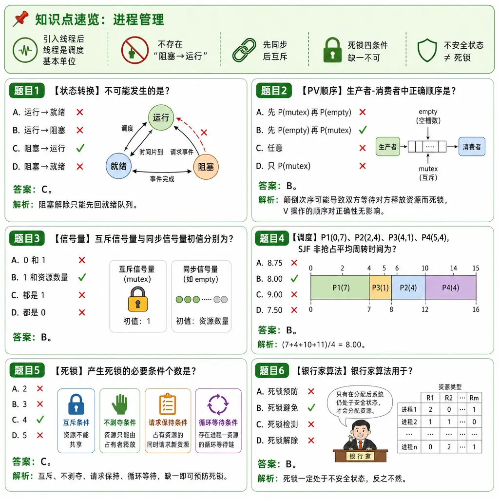
（考点归类供参考，具体题号以历年原卷为准）
第3章 内存管理
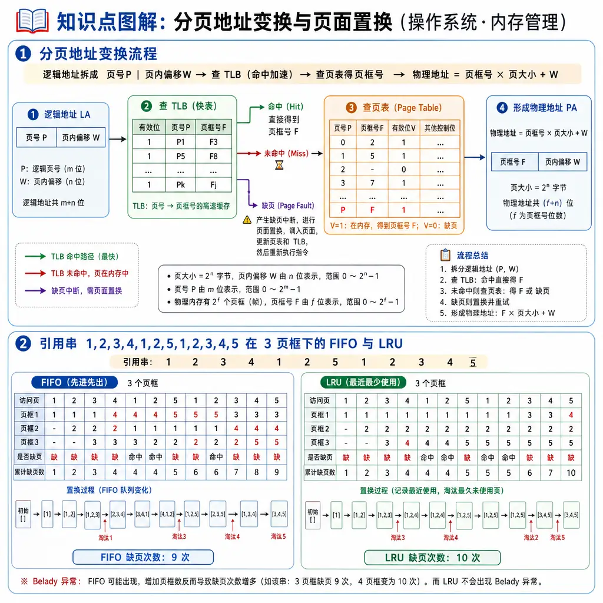
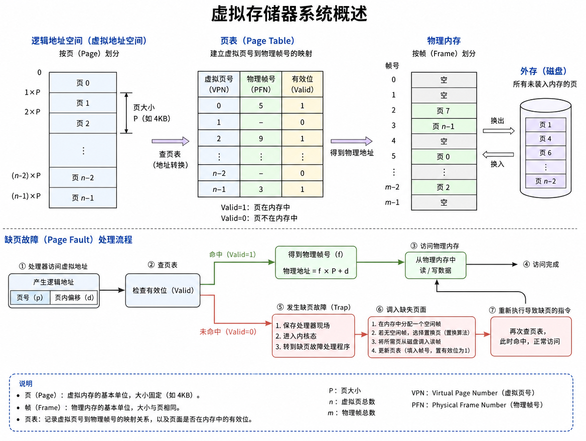
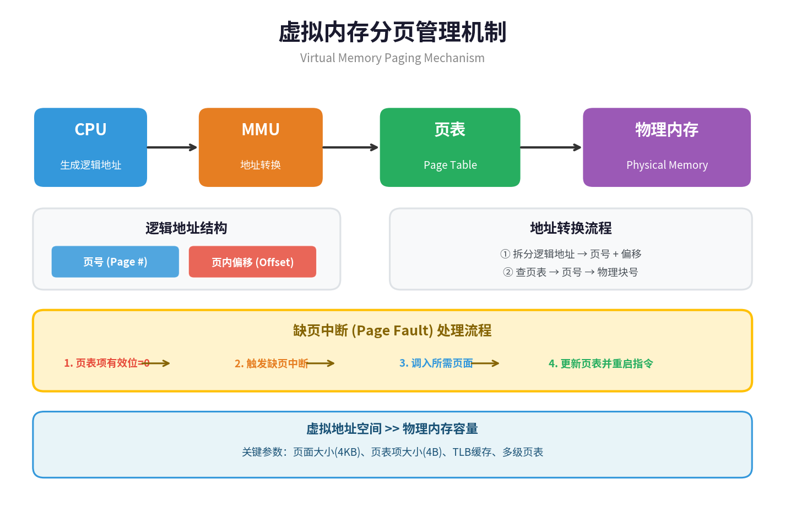
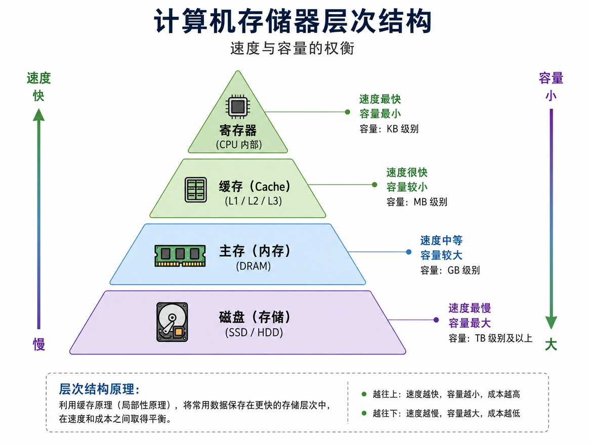
【分值占比】约 8~14 分
【考频】⭐⭐⭐⭐⭐（最高频，大题重灾区）
【必背】
- 内存管理的概念：逻辑地址 vs 物理地址、五大功能、链接与装入、交换与覆盖、内存保护
- 连续分配：单一、固定、动态分区
- 非连续分配：分页、分段、段页式
- 分页存储：页表、地址变换、快表TLB、有效访问时间EAT
- 分段存储：段表、地址变换、段的共享与保护
- 虚拟内存：请求分页、页面置换算法
- 页面置换算法：OPT、FIFO、LRU、CLOCK（含逐次演算与缺页率）
- 页面分配策略、工作集、抖动、缺页中断
【核心概念】
3.1 内存管理概述
内存管理的五大功能： 1. 内存空间的分配与回收：为进程分配内存空间，进程结束后回收 2. 地址转换（重定位）：将逻辑地址转换为物理地址 3. 内存空间的扩充：借助覆盖、交换和虚拟存储，在逻辑上扩充内存容量 4. 存储保护：保证各进程只在自己的内存空间内运行，互不干扰 5. 内存共享：允许多个进程访问内存的同一区域（如共享库）
逻辑地址（虚拟地址）：程序中使用的地址。 物理地址：内存中的实际地址。 重定位：将逻辑地址转为物理地址。 - 静态重定位：装入时一次性完成转换，运行中不可移动 - 动态重定位：运行时转换（依赖重定位/基址寄存器），程序可在内存中移动
程序的链接：
| 链接方式 | 说明 |
|---|---|
| 静态链接 | 运行前把各目标模块及库函数链接成完整的可执行程序，之后不再拆开 |
| 装入时动态链接 | 边装入内存边链接 |
| 运行时动态链接 | 执行中需要某模块时才链接（便于修改更新与共享，如动态链接库） |
程序的装入：
| 装入方式 | 重定位时机 | 特点 |
|---|---|---|
| 绝对装入 | 编译时产生绝对地址 | 只适合单道程序，装入位置固定 |
| 可重定位装入 | 装入时（静态重定位） | 装入后不能移动，不能申请扩充内存 |
| 动态运行时装入 | 运行时（动态重定位） | 需重定位寄存器支持，程序可移动，是虚拟存储的基础 |
交换与覆盖： - 覆盖（Overlay）：同一进程内部，按调用关系让不同时执行的程序段轮流装入同一内存区。需程序员显式声明覆盖结构，对用户不透明 - 交换（Swapping）：把暂时不运行的整个进程换出到外存（挂起），需要时再换入内存，发生在不同进程之间
⚠️ 易错警示：覆盖是同一进程内部不同程序段之间；交换是不同进程之间。交换即中级调度（挂起/激活）。
内存保护： - 上下限寄存器法：CPU 检查每个访存地址是否落在 [下限, 上限] 区间内，越界则产生越界中断 - 基址+限长寄存器法：基址（重定位）寄存器存放进程起始物理地址，实现重定位；限长（界地址）寄存器存放逻辑地址最大值。要求逻辑地址 < 限长，物理地址 = 基址 + 逻辑地址
3.2 连续分配
单一连续分配：整个内存给一道程序。
固定分区分配：内存分成若干固定大小分区。
动态分区分配：按需分配，产生外部碎片。
动态分区分配算法： | 算法 | 思想 | 特点 | |------|------|------| | 首次适应（FF） | 从头找第一个够大的 | 低地址碎片多 | | 最佳适应（BF） | 找最小的够大的 | 碎片小但多 | | 最坏适应（WF） | 找最大的 | 大空闲区被切碎，缺乏大块可用 | | 邻近适应（NF） | 从上次结束位置找 | 均匀分布 |
紧凑（Compaction）：移动已分配分区，合并空闲区，解决外部碎片。
3.3 分页存储
基本思想：将进程和内存都分成固定大小的页/页框。
地址结构：
| 页号 P | 页内偏移 W |
页表：记录页号到页框号的映射。 - 页表项：页框号 + 有效位 + 修改位 + 访问位 + 保护位
地址变换： 1. 逻辑地址拆分：页号 + 页内偏移 2. 查页表得页框号 3. 物理地址 = 页框号 × 页大小 + 页内偏移
【例】地址拆分与页表大小计算：某系统逻辑地址为 32 位，页面大小为 4KB，页表项占 4B。求：① 页内偏移与页号各占多少位；② 页表最多有多少项；③ 页表最大占用多少空间。
解答要点： - 页内偏移位数 = $\log_2 4\text{KB} = 12$ 位；页号位数 = $32 - 12 = 20$ 位 - 页表最多 $2^{20}$ 项；页表最大占用 = $2^{20} \times 4\text{B} = 4\text{MB}$
💡 页面大小必为 2 的幂；页号位数 + 页内偏移位数 = 逻辑地址总位数。
快表（TLB）： - 页表的高速缓存，存放最近使用的页表项 - 全相联或组相联 - TLB命中则无需访问内存中的页表
含快表的有效访问时间（EAT）：
设 TLB 命中率为 $\alpha$，查快表时间为 $\varepsilon$，一次访存时间为 $t$：
$$ \text{EAT} = \alpha(\varepsilon + t) + (1-\alpha)(\varepsilon + 2t) $$
命中时：查 TLB + 访存取数，共 $\varepsilon + t$；未命中时：查 TLB + 访存查页表 + 访存取数，共 $\varepsilon + 2t$。若题目说明忽略 TLB 查找时间，则 $\text{EAT} = \alpha t + (1-\alpha)\cdot 2t$。
【例】设访问快表需 20ns，访问内存需 100ns，TLB 命中率为 90%，求有效访问时间。
解答要点： $$ \text{EAT} = 0.9 \times (20+100) + 0.1 \times (20+200) = 108 + 22 = 130\text{ns} $$ 若不计 TLB 查找时间：$\text{EAT} = 0.9 \times 100 + 0.1 \times 200 = 110\text{ns}$。
⚠️ 易错警示：先看清题目是否计入 TLB 查找时间，两种口径在真题中都出现过。
二级页表： - 页目录表 + 页表 - 减少页表占用连续空间
【例】二级页表地址拆分：32 位逻辑地址，页面大小 4KB，页表项 4B。采用二级页表，并要求每级页表都不超过一页，应如何划分地址结构？
解答要点： - 一页可存放页表项数 = $4\text{KB}/4\text{B} = 1024 = 2^{10}$ 项，故每级页号占 10 位 - 页内偏移 12 位，剩余 $32-12=20$ 位拆成两级各 10 位：
| 一级页号(10位) | 二级页号(10位) | 页内偏移(12位) |
- 这样每级页表恰好占一页（4KB），可离散存放
🔑 口诀："页表项数定级数，每级不超一页框"。
3.4 分段存储
基本思想：按程序逻辑分段，段长可变。
地址结构：
| 段号 S | 段内偏移 W |
段表：段号 → 段基址 + 段长 + 状态
地址变换： 1. 查段表得段基址和段长 2. 检查段内偏移是否越界 3. 物理地址 = 段基址 + 段内偏移
段的共享与保护： - 共享段：多个进程共享同一段代码或数据。实现上各进程段表中相应表项指向同一物理段；系统设共享段表记录共享该段的进程数（类似引用计数），计数为 0 时才回收该段 - 可重入代码（纯代码）：执行过程中不允许任何进程对其修改的代码（自身不含可修改的数据区），可被多个进程同时共享。共享的代码必须是可重入的 - 段的保护：① 越界检查：段内偏移必须小于段长；② 存取控制检查：段表项中设置读/写/执行权限位，按权限核验每次访问
分页 vs 分段：
| 特性 | 分页 | 分段 |
|---|---|---|
| 单位大小 | 固定（页大小） | 可变（段长） |
| 用户可见性 | 透明 | 可见 |
| 目的 | 减少外部碎片 | 逻辑独立 |
| 共享 | 不易 | 容易（共享段） |
| 保护 | 页级 | 段级 |
3.5 段页式存储
基本思想：先分段，段内再分页。
地址结构：
| 段号 S | 页号 P | 页内偏移 W |
地址变换： 1. 查段表得页表始址 2. 查页表得页框号 3. 物理地址 = 页框号 × 页大小 + 页内偏移
需要三次访存（段表→页表→数据），TLB可减少次数。
【例】某段页式系统逻辑地址 32 位：段号 8 位、页号 12 位、页内偏移 12 位。求：页大小、每段最多页数、最多段数。
解答要点： - 页大小 = $2^{12}\text{B} = 4\text{KB}$ - 每段最多 $2^{12} = 4096$ 页，每段最大 $2^{12} \times 4\text{KB} = 16\text{MB}$ - 最多 $2^8 = 256$ 段
3.6 虚拟内存
基本思想：基于局部性原理，只将部分程序装入内存即可运行。
请求分页： - 基本分页 + 请求调页 + 页面置换 - 页表增加：有效位（是否在内存）、修改位、访问位、外存地址
页面置换算法：
| 算法 | 思想 | 优点 | 缺点 |
|---|---|---|---|
| OPT（最佳） | 淘汰最长时间不用的 | 理论最优 | 不可实现（需预知未来） |
| FIFO | 先进先出 | 简单 | Belady异常（分配页框多反而缺页多） |
| LRU | 最近最久未用 | 性能好 | 实现复杂 |
| CLOCK（NRU） | 近似LRU，循环扫描 | 开销小 | 略逊于LRU |
| 改进型CLOCK | 考虑修改位 | 减少I/O | 稍复杂 |
Belady异常：FIFO算法特有的现象，页框增加缺页率反而增加。
【例】页面置换演算：引用串为 1, 2, 3, 4, 1, 2, 5, 1, 2, 3, 4, 5（共 12 次访问），分别计算 3 个和 4 个页框下 OPT、FIFO、LRU 的缺页次数与缺页率。
解答要点（内存块按行给出每步内容，√ 表示缺页）：
OPT，3 页框：
| 访问 | 1 | 2 | 3 | 4 | 1 | 2 | 5 | 1 | 2 | 3 | 4 | 5 |
|---|---|---|---|---|---|---|---|---|---|---|---|---|
| 页框1 | 1 | 1 | 1 | 1 | 1 | 1 | 1 | 1 | 1 | 3 | 3 | 3 |
| 页框2 | 2 | 2 | 2 | 2 | 2 | 2 | 2 | 2 | 2 | 4 | 4 | |
| 页框3 | 3 | 4 | 4 | 4 | 5 | 5 | 5 | 5 | 5 | 5 | ||
| 缺页 | √ | √ | √ | √ | √ | √ | √ |
缺页 7 次，缺页率 = $7/12 \approx 58.3\%$。
FIFO，3 页框：
| 访问 | 1 | 2 | 3 | 4 | 1 | 2 | 5 | 1 | 2 | 3 | 4 | 5 |
|---|---|---|---|---|---|---|---|---|---|---|---|---|
| 页框1 | 1 | 1 | 1 | 4 | 4 | 4 | 5 | 5 | 5 | 5 | 5 | 5 |
| 页框2 | 2 | 2 | 2 | 1 | 1 | 1 | 1 | 1 | 3 | 3 | 3 | |
| 页框3 | 3 | 3 | 3 | 2 | 2 | 2 | 2 | 2 | 4 | 4 | ||
| 缺页 | √ | √ | √ | √ | √ | √ | √ | √ | √ |
缺页 9 次，缺页率 = $9/12 = 75\%$。
FIFO，4 页框（演示 Belady 异常）：
| 访问 | 1 | 2 | 3 | 4 | 1 | 2 | 5 | 1 | 2 | 3 | 4 | 5 |
|---|---|---|---|---|---|---|---|---|---|---|---|---|
| 页框1 | 1 | 1 | 1 | 1 | 1 | 1 | 5 | 5 | 5 | 5 | 4 | 4 |
| 页框2 | 2 | 2 | 2 | 2 | 2 | 2 | 1 | 1 | 1 | 1 | 5 | |
| 页框3 | 3 | 3 | 3 | 3 | 3 | 3 | 2 | 2 | 2 | 2 | ||
| 页框4 | 4 | 4 | 4 | 4 | 4 | 4 | 3 | 3 | 3 | |||
| 缺页 | √ | √ | √ | √ | √ | √ | √ | √ | √ | √ |
缺页 10 次，缺页率 = $10/12 \approx 83.3\%$。页框从 3 增到 4，缺页反而从 9 增到 10 → Belady 异常。
LRU，3 页框：
| 访问 | 1 | 2 | 3 | 4 | 1 | 2 | 5 | 1 | 2 | 3 | 4 | 5 |
|---|---|---|---|---|---|---|---|---|---|---|---|---|
| 页框1 | 1 | 1 | 1 | 4 | 4 | 4 | 5 | 5 | 5 | 3 | 3 | 3 |
| 页框2 | 2 | 2 | 2 | 1 | 1 | 1 | 1 | 1 | 1 | 4 | 4 | |
| 页框3 | 3 | 3 | 3 | 2 | 2 | 2 | 2 | 2 | 2 | 5 | ||
| 缺页 | √ | √ | √ | √ | √ | √ | √ | √ | √ | √ |
缺页 10 次，缺页率 = $10/12 \approx 83.3\%$。
缺页率对比汇总：
| 算法 | 3 页框缺页次数 | 缺页率 | 4 页框缺页次数 | 缺页率 |
|---|---|---|---|---|
| OPT | 7 | 58.3% | 6 | 50% |
| FIFO | 9 | 75% | 10 | 83.3%（Belady） |
| LRU | 10 | 83.3% | 8 | 66.7% |
🔑 口诀："FIFO 会 Belady，LRU 栈式不会"——LRU、OPT 属于栈式算法，分配的页框增多时缺页数只减不增；FIFO 不是栈式算法，可能出现 Belady 异常。
含缺页的有效访问时间（EAT）：
设缺页率为 $p$（$0 \le p < 1$），无缺页时一次访存时间为 $t$，缺页处理（缺页中断 + 调页 + 重新访存）总开销为 $t_f$：
$$ \text{EAT} = (1-p)\,t + p\,t_f $$
【例】设一次访存时间为 100ns，平均缺页处理时间为 8ms。若要求 EAT 相对无缺页时下降不超过 10%，求缺页率 $p$ 的上限。
解答要点： $$ (1-p)\times 100 + p \times 8\times 10^{6} \le 110 \text{ (ns)} $$ $$ p \le \frac{10}{8\times 10^{6} - 100} \approx 1.25\times 10^{-6} $$
即约每 $8\times 10^{5}$ 次访存中至多允许缺页 1 次——缺页率必须极低，虚拟内存才有效率。
页面分配策略： - 固定分配局部置换：每个进程页框数固定 - 可变分配全局置换：可从全局空闲页框分配 - 可变分配局部置换：只允许从本进程置换
工作集：某段时间间隔内进程访问的页面集合。 - 工作集大小可指导分配给进程的页框数 - 工作集窗口太大：浪费内存；太小：频繁缺页
抖动（Thrashing）： - 现象：刚换出的页很快又被访问，频繁换入换出 - 原因：进程太多，每个进程页框太少，工作集不能全部驻留 - 解决：减少并发度、增加内存、局部置换
缺页中断处理： 1. 保护CPU现场 2. 分析中断原因（缺页） 3. 从外存调入所需页 4. 若内存满，按置换算法淘汰一页 5. 修改页表，恢复现场
缺页中断 vs 一般中断：
| 对比点 | 缺页中断 | 一般（外）中断 |
|---|---|---|
| 发生时机 | 指令执行期间发现、立即响应（内中断/异常） | 一条指令执行结束后才响应 |
| 次数 | 一条指令执行中可能产生多次缺页（指令本身、源操作数、目的操作数均可跨页） | 一次指令间至多响应一次 |
| 返回位置 | 处理完后重新执行本条指令 | 返回断点执行下一条指令 |
【易错警示】
- ⚠️ 分页没有外部碎片，但有内部碎片（平均半页）
- ⚠️ 分段没有内部碎片，但有外部碎片
- ⚠️ 页表本身也占用内存，多级页表可减少连续空间需求
- ⚠️ TLB miss ≠ Page Fault，TLB miss可能页在主存只是TLB没缓存
- ⚠️ FIFO有Belady异常，LRU和OPT没有
- ⚠️ 请求分页中，页表项的修改位决定换出时是否写回磁盘
- ⚠️ 虚拟地址空间大小由地址位数决定，不是由物理内存决定
- ⚠️ 抖动是因为页框不足，不是CPU太慢
- ⚠️ 缺页中断发生在指令执行过程中，一条指令可能触发多次缺页中断
【真题速查】
| 年份 | 题号 | 考点 |
|---|---|---|
| 2024 | 25, 26, 46 | 分页地址变换、页面置换、内存大题 |
| 2023 | 25, 26, 46 | 段页式、LRU、内存大题 |
| 2022 | 25, 26, 46 | 请求分页、CLOCK算法、内存大题 |
| 2021 | 25, 26, 46 | 虚拟内存、工作集、内存大题 |
| 2020 | 25, 26, 46 | 分页计算、缺页处理、内存大题 |
| 2019 | 25, 26, 46 | 分段、页面置换、内存大题 |
逐题真题：先阅读上方知识点，再按年份展开下列原题；每道题均已对应本章节知识点。

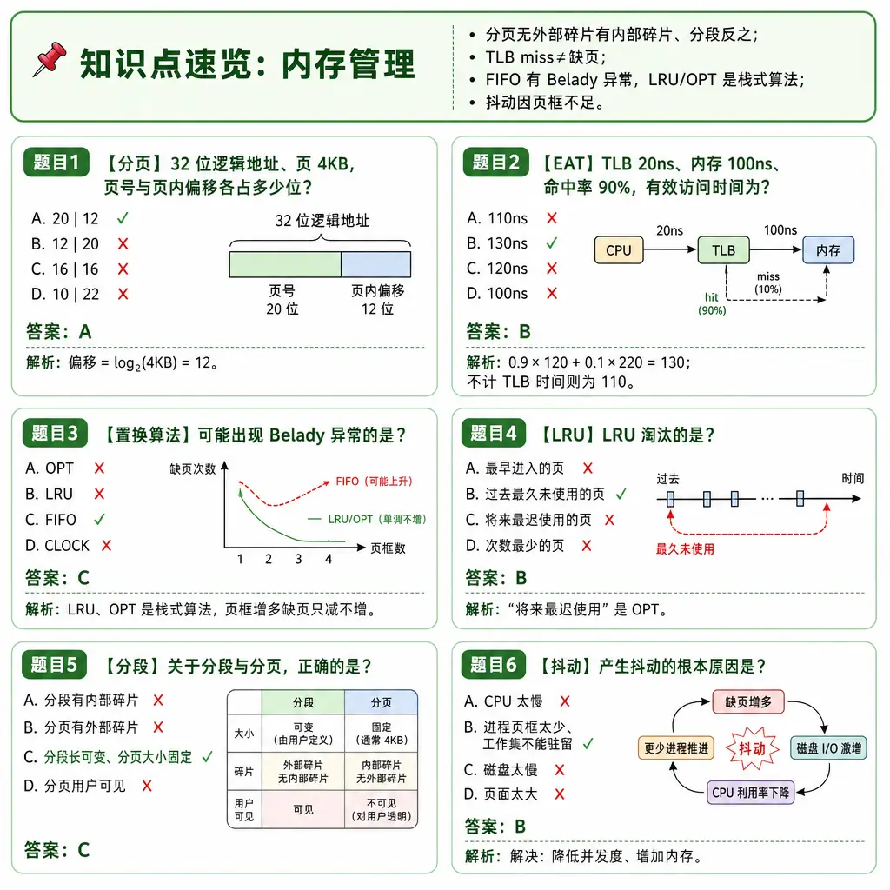
（考点归类供参考，具体题号以历年原卷为准）
第4章 文件管理
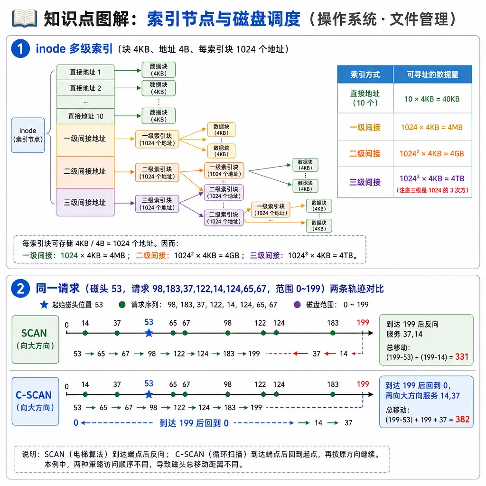
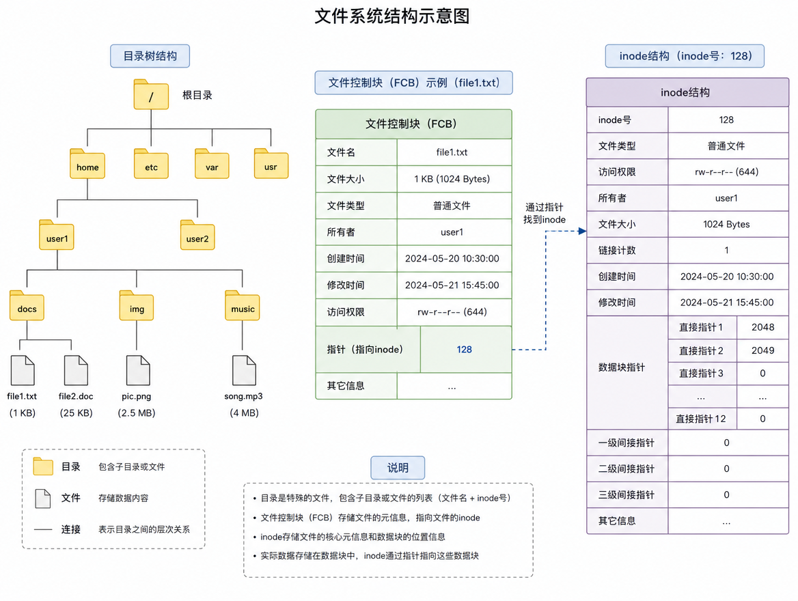
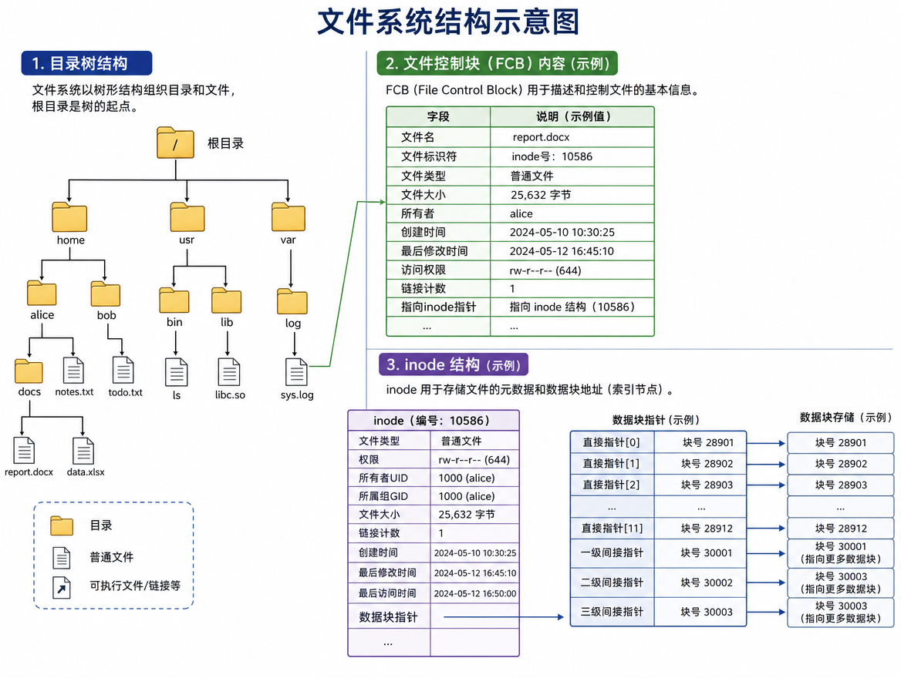
【分值占比】约 6~10 分
【考频】⭐⭐⭐⭐（高频，磁盘调度常考计算题）
【必背】
- 文件逻辑结构：有结构（顺序、索引、索引顺序）vs 无结构（流式文件）
- 文件物理结构：连续分配、链接分配、索引分配
- 文件控制块FCB与索引节点inode、目录项 = 文件名 + inode号
- 目录结构：单级、两级、树形、无环图、通用图
- 文件共享：硬链接 vs 软链接（符号链接）
- 文件保护：访问控制、口令、密码
- 磁盘访问时间组成（寻道 + 旋转延迟 + 传输）
- 磁盘调度算法：FCFS、SSTF、SCAN、C-SCAN、LOOK、C-LOOK
- 磁盘空间管理：空闲表、空闲链表、位示图、成组链接法
- 索引节点地址计算
【核心概念】
4.1 文件的基本概念
文件：具有文件名的一组相关信息的集合，是文件系统中最大的数据单位。
文件的属性：文件名、标识符、类型、位置、大小、保护、时间等。
4.2 文件逻辑结构
无结构文件（流式文件）： - 文件内部不划分记录，只是一串字节序列（字节流） - 长度以字节为单位，靠读/写指针逐字节访问，如文本文件、可执行文件 - 对字节流的解释（记录如何划分）由应用程序负责；UNIX、Windows 中的文件都视为流式文件
⚠️ 易错警示："将数据按顺序组织成记录并积累保存"是顺序文件的定义，不是流式文件——流式文件内部无记录结构。
有结构文件：
| 类型 | 组织方式 | 特点 | 适用场景 |
|---|---|---|---|
| 顺序文件 | 记录按关键字顺序排列 | 顺序存取快，随机存取慢 | 批量数据处理 |
| 索引文件 | 为每个记录建立索引表 | 支持直接存取，索引表占空间 | 随机访问频繁 |
| 索引顺序文件 | 顺序文件 + 索引表（为一组记录建索引） | 折中方案 | 大型文件 |
结论：顺序文件适合顺序存取，索引文件适合随机存取，索引顺序文件是两者的折中。
4.3 文件物理结构
连续分配： - 每个文件占用连续的磁盘块 - 目录项中记录起始块号和块数 - 优点：顺序存取快，支持直接存取 - 缺点：产生外部碎片，文件长度不易动态增长
链接分配： - 每个磁盘块中存放下一个块的指针 - 隐式链接：指针在块中，对用户透明 - 显式链接（FAT）：指针集中存放在文件分配表FAT中 - 优点：无外部碎片，文件可动态增长 - 缺点：只能顺序存取，指针占用空间，可靠性差（一个块损坏导致后续都丢失）
索引分配： - 每个文件有一个索引块，记录该文件所有数据块的块号 - 优点：支持直接存取，无外部碎片 - 缺点：索引块占用额外空间 - 多级索引：大文件需要多个索引块，采用间接索引方式
| 物理结构 | 连续 | 链接 | 索引 |
|---|---|---|---|
| 顺序存取 | 快 | 中 | 中 |
| 随机存取 | 快 | 不支持 | 快 |
| 外部碎片 | 有 | 无 | 无 |
| 内部碎片 | 有（最后一块用不满） | 有（最后一块用不满） | 有（最后一块用不满） |
| 文件增长 | 困难 | 容易 | 容易 |
⚠️ 易错警示：三种方式都按盘块为单位分配，文件最后一块都可能用不满 → 都有内部碎片；外部碎片才是连续分配独有的。
4.4 文件控制块（FCB）与索引节点（inode）
文件控制块（FCB）：文件系统为每个文件建立的、用于描述和控制文件的数据结构。一个 FCB 就是一个目录项，全部 FCB 组成文件目录。
FCB 主要包含三类信息： - 基本信息：文件名、文件类型、文件长度（字节数）、文件的物理位置（起始块号等） - 存取控制信息：文件主、核准用户及其访问权限 - 使用信息：创建时间、最近修改时间、最近访问时间等
索引节点（inode）：为提高目录检索效率，将 FCB 中除文件名以外的所有信息抽出，单独组成索引节点；磁盘上所有 inode 连续编号存放。 - 目录项 = 文件名 + 指向该文件的 inode 号 - 好处：目录项大幅变短，一次磁盘读可装入更多目录项，按文件名逐级检索目录时显著减少磁盘 I/O 次数 - inode 内容：文件主标识、文件类型、存取权限、文件长度、物理地址指针（直接 + 各级间接索引）、时间戳、链接计数 nlink
open 系统调用流程： 1. 按路径名逐级检索目录，找到目标文件的目录项，读出 inode 号 2. 将 inode 读入内存，进行存取权限检查 3. 在系统打开文件表中登记（读入 inode、设置读写指针与共享计数） 4. 在进程打开文件表中分配表项，返回文件描述符 fd 5. 之后读/写只需使用 fd，无需再按名检索目录
💡 按名检索目录需逐层读目录文件，每级都可能引发磁盘 I/O——这正是"目录项瘦身为 文件名+inode号"的意义所在。
4.5 目录结构
| 目录结构 | 特点 | 缺点 |
|---|---|---|
| 单级目录 | 所有文件在同一目录 | 命名冲突，查找慢 |
| 两级目录 | 主文件目录 + 用户文件目录 | 不能共享，结构简单 |
| 树形目录 | 层次结构，绝对路径/相对路径 | 不便共享 |
| 无环图目录 | 允许文件/目录有多个父目录（共享） | 管理复杂 |
| 通用图目录 | 允许目录之间有环 | 实现复杂，需避免循环 |
结论：树形目录是现代OS最常用的结构；无环图目录通过硬链接实现文件共享。
4.6 文件共享
硬链接： - 多个目录项指向同一个索引节点（inode） - 共享同一个物理文件 - 删除时只有链接计数减1，计数为0时才真正删除文件 - 不能跨文件系统建立硬链接
软链接（符号链接）： - 创建一个新的文件，内容是被链接文件的路径名 - 通过路径名间接访问原文件 - 删除原文件后软链接失效（悬空指针） - 可以跨文件系统，甚至可以链接目录
| 特性 | 硬链接 | 软链接 |
|---|---|---|
| 实现方式 | 多个目录项指向同一inode | 新建文件存储原文件路径 |
| 原文件删除 | 仍能访问（计数减1） | 链接失效 |
| 跨文件系统 | 不支持 | 支持 |
| 链接目录 | 通常不允许 | 允许 |
| 额外空间 | 几乎不占用 | 占用少量空间存路径 |
4.7 文件保护
| 保护方式 | 说明 |
|---|---|
| 访问控制 | 基于用户身份设置访问权限（读、写、执行） |
| 访问控制列表（ACL） | 为每个文件/目录设置详细的用户权限列表 |
| 口令 | 用户访问文件前需输入口令 |
| 密码 | 对文件内容进行加密 |
4.8 磁盘管理
一次磁盘访问的时间组成：
$$ T_{访问} = T_{寻道} + T_{旋转延迟} + T_{传输} $$
- 寻道时间 $T_s = m \times n + s$：磁头移到目标磁道所需时间。$n$ 为跨越磁道数，$m$ 为每跨越一道的时间（与驱动器有关），$s$ 为启动磁臂时间
- 旋转延迟 $T_r$：目标扇区旋转到磁头下方的时间。平均取半圈：$T_r = \dfrac{1}{2r}$（$r$ 为转速，转/秒）
- 传输时间 $T_t = \dfrac{b}{rN}$：读写数据的时间。$b$ 为读写字节数，$N$ 为每磁道字节数
【例】磁盘转速 7200 rpm（即 120 转/秒），每磁道 400 个扇区，每扇区 512B。设平均寻道时间为 8ms，求读取一个扇区的平均访问时间。
解答要点： - 平均旋转延迟 = $\dfrac{1}{2 \times 120}\text{s} \approx 4.17\text{ms}$ - 传输时间 = $\dfrac{1}{120 \times 400}\text{s} \approx 0.021\text{ms}$ - 平均访问时间 ≈ $8 + 4.17 + 0.021 \approx 12.2\text{ms}$
⚠️ 易错警示：寻道时间占大头，因此磁盘调度算法只优化寻道，不优化旋转延迟（考研默认约定）。
磁盘调度算法：
| 算法 | 全称 | 策略 | 优点 | 缺点 |
|---|---|---|---|---|
| FCFS | 先来先服务 | 按请求顺序服务 | 公平、简单 | 寻道时间长，效率低 |
| SSTF | 最短寻道时间优先 | 选距离当前磁头最近的请求 | 平均寻道时间短 | 可能产生饥饿（远端请求长期等待） |
| SCAN | 电梯算法 | 磁头单向移动，服务途中请求，到端点后反向 | 避免饥饿，效率高 | 两端请求等待时间不均 |
| C-SCAN | 循环扫描 | 磁头单向移动，到端点后快速回到起点继续 | 等待时间更均匀 | 返回时不服务 |
| LOOK | 扫描 LOOK | SCAN的改进，不到端点，到最后一个请求就反向 | 减少无用移动 | 类似SCAN |
| C-LOOK | 循环 LOOK | C-SCAN的改进，到最后一个请求后快速回到最前 | 效率更高 | 返回时不服务 |
结论：SCAN（电梯）算法是考试最常考的；SSTF可能饥饿；C-SCAN/C-LOOK等待时间最均匀。
🔑 口诀："SCAN 到端点才回头，LOOK 见尾就回头，C-SCAN 到头飞回起点"。
磁盘空间管理：
| 方法 | 原理 | 特点 |
|---|---|---|
| 空闲表法 | 用表记录所有空闲块 | 适合连续分配，需合并相邻空闲区 |
| 空闲链表法 | 空闲块用指针链接 | 简单，但分配和回收需多次I/O |
| 位示图法 | 用二进制位表示块是否空闲 | 易找到连续/单个空闲块，位示图可常驻内存 |
| 成组链接法 | 空闲块分组，每组用一块记录下一组块号 | UNIX采用，兼顾效率和空间 |
4.9 真题常考：磁盘调度算法计算
示例：当前磁头在53号磁道，请求序列为 98, 183, 37, 122, 14, 124, 65, 67（磁道范围 0~199）。
FCFS：按请求顺序移动，总移动 = |98-53| + |183-98| + ... = 640
SSTF：每次选最近的，总移动 = 236
SCAN（假设向大方向）：53→65→67→98→122→124→183→199→37→14，总移动 = $(199-53) + (199-14) = 146 + 185 = 331$
⚠️ 易错警示：SCAN 到端点 199 后反向服务，总移动是 331；若算出 382，那是 C-SCAN 的值（$199-53$ 之后不服务地回到 0，再向大方向服务：$(199-53)+199+(37-0)=382$），两者不要混淆。
结论：做磁盘调度题时，务必注意磁头初始方向、磁道范围（0~199）！
4.10 索引节点地址计算
直接地址 + 间接地址： - 假设索引节点中有10个直接地址项，1个一级间接、1个二级间接、1个三级间接 - 磁盘块大小为4KB，地址项大小为4B - 每个块可存放的地址数 = 4KB / 4B = 1024个
最大文件大小计算： - 直接地址：10 × 4KB = 40KB - 一级间接：1024 × 4KB = 4MB - 二级间接：1024² × 4KB = 4GB - 三级间接：1024³ × 4KB = 4TB
访问某字节需要几次磁盘I/O： - 直接地址范围：1次（读数据块） - 一级间接范围：2次（读间接块 + 读数据块） - 二级间接范围：3次 - 三级间接范围：4次
结论：间接级别越多，最大文件越大，但访问所需I/O次数也越多！
【易错警示】
- ⚠️ 链接分配只能顺序存取，不能随机存取（显式链接FAT可以随机存取）
- ⚠️ 索引分配中，索引块本身也占用磁盘空间
- ⚠️ 硬链接不能跨文件系统，软链接可以
- ⚠️ 删除原文件后，硬链接仍能访问，软链接失效
- ⚠️ SCAN算法到端点才反向，LOOK到最后一个请求就反向
- ⚠️ 位示图中1表示已分配/空闲取决于系统约定（通常0空闲1占用）
- ⚠️ 计算磁盘I/O次数时，不要忘记读索引块本身也要一次I/O
- ⚠️ 目录项不等于 FCB 的全部：引入 inode 后目录项只剩"文件名 + inode号"
【真题速查】
| 年份 | 题号 | 考点 |
|---|---|---|
| 2024 | 27, 28, 46 | 磁盘调度、索引节点、文件大题 |
| 2023 | 27, 28, 46 | 文件物理结构、磁盘调度、文件大题 |
| 2022 | 27, 28, 46 | 文件分配、FAT、文件大题 |
| 2021 | 27, 28, 46 | 磁盘空间管理、目录结构、文件大题 |
| 2020 | 27, 28, 46 | 索引分配、磁盘调度、文件大题 |
| 2019 | 27, 28, 46 | 链接分配、SCAN算法、文件大题 |
逐题真题：先阅读上方知识点，再按年份展开下列原题；每道题均已对应本章节知识点。

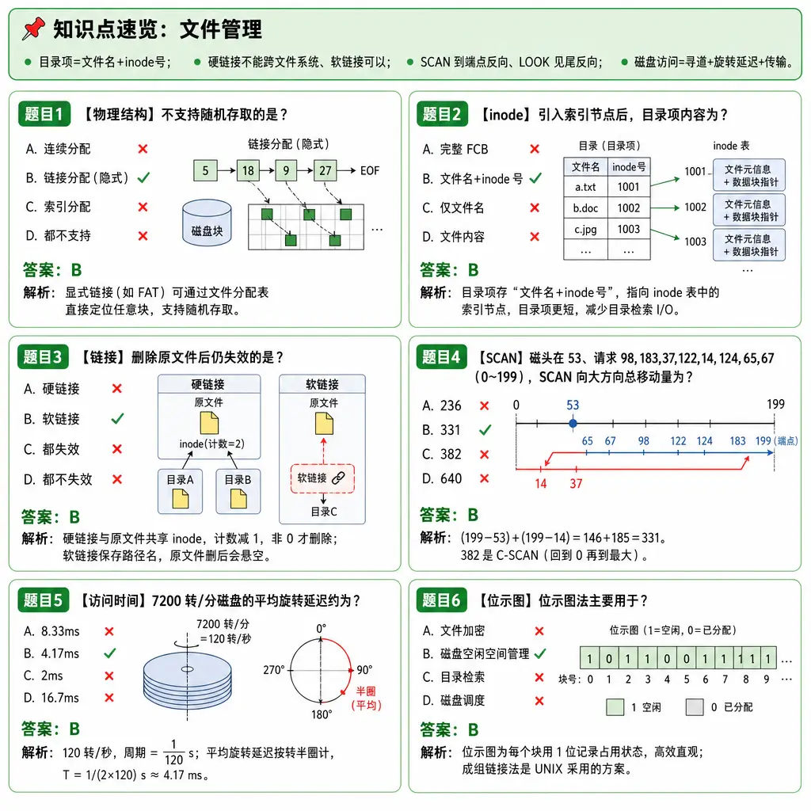
（考点归类供参考，具体题号以历年原卷为准）
第5章 I/O管理
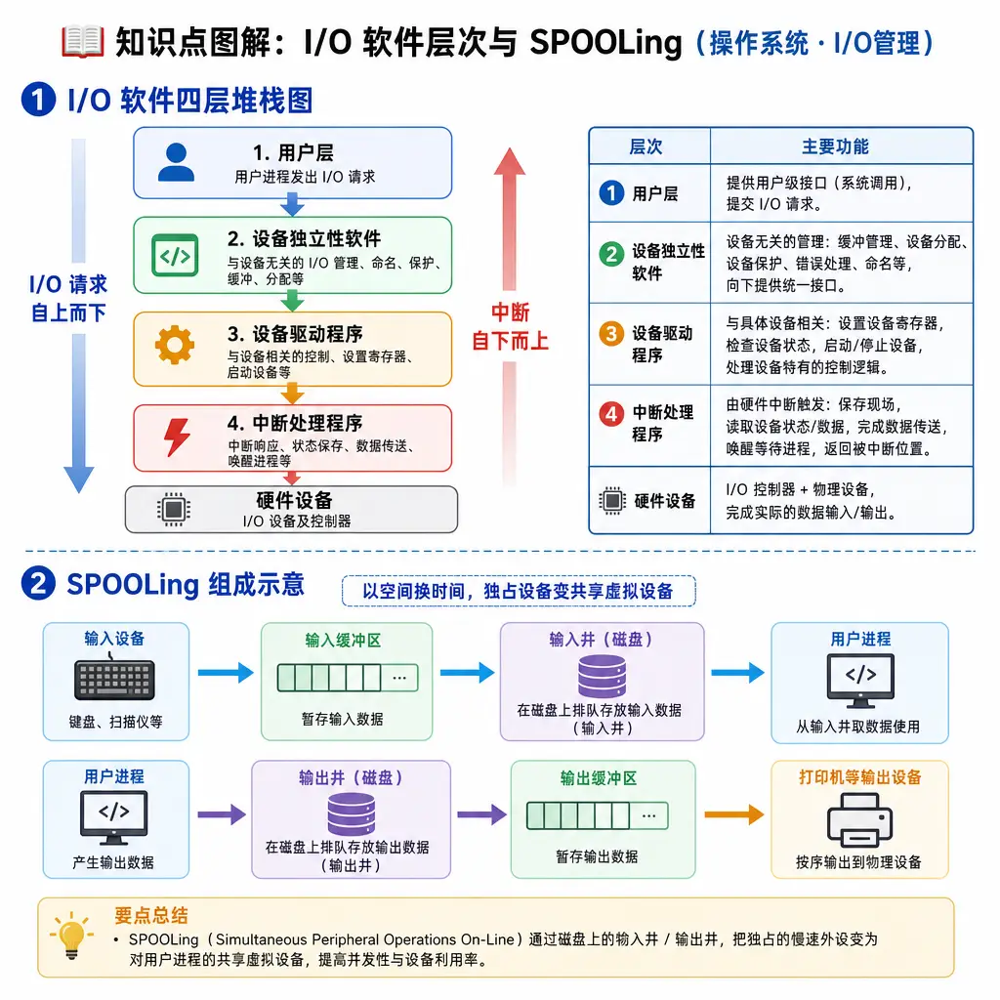
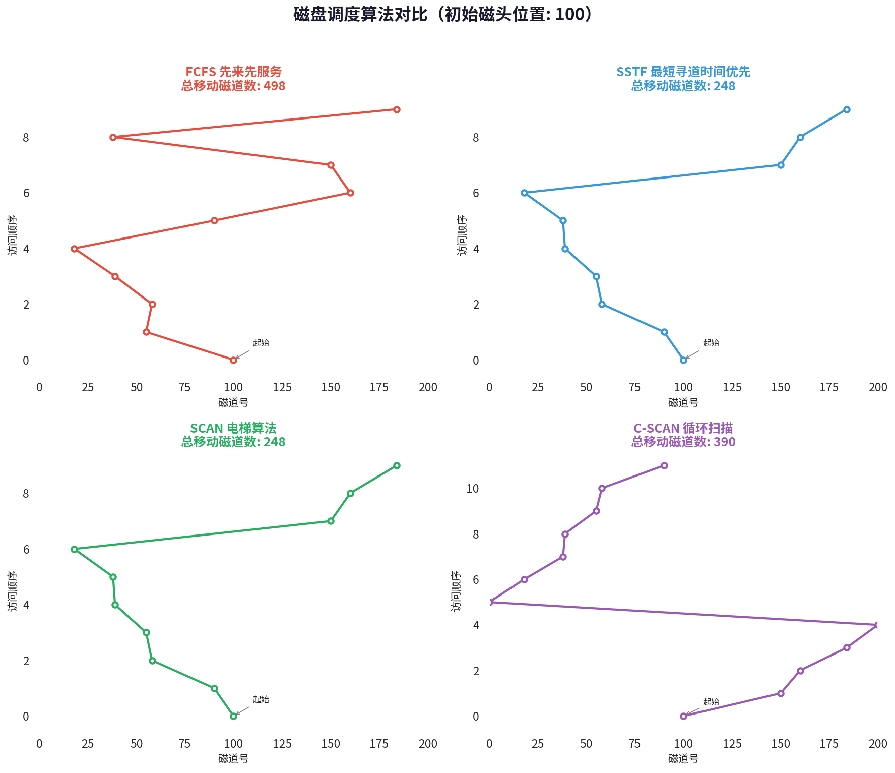
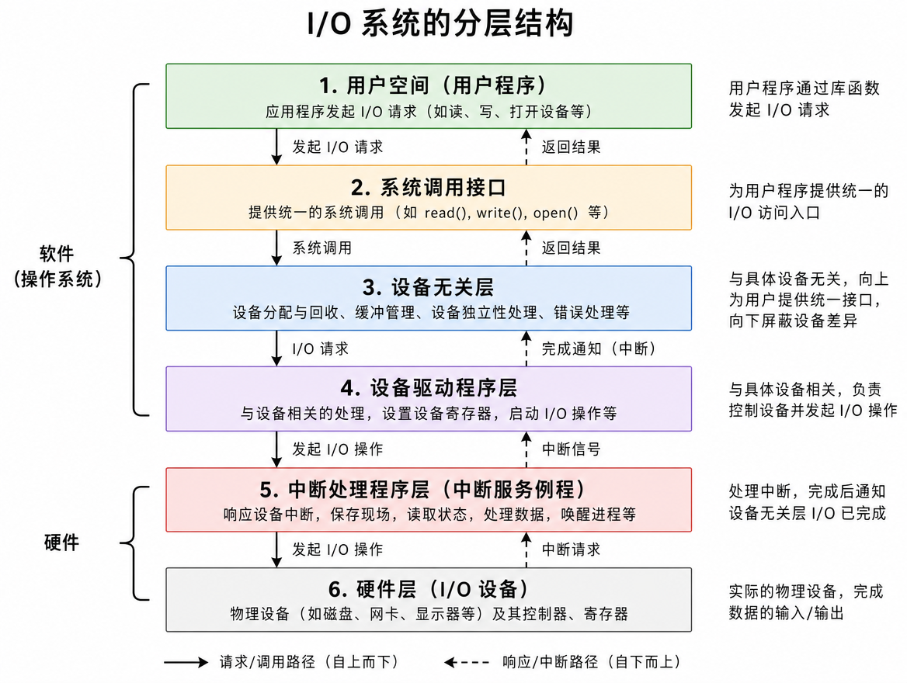
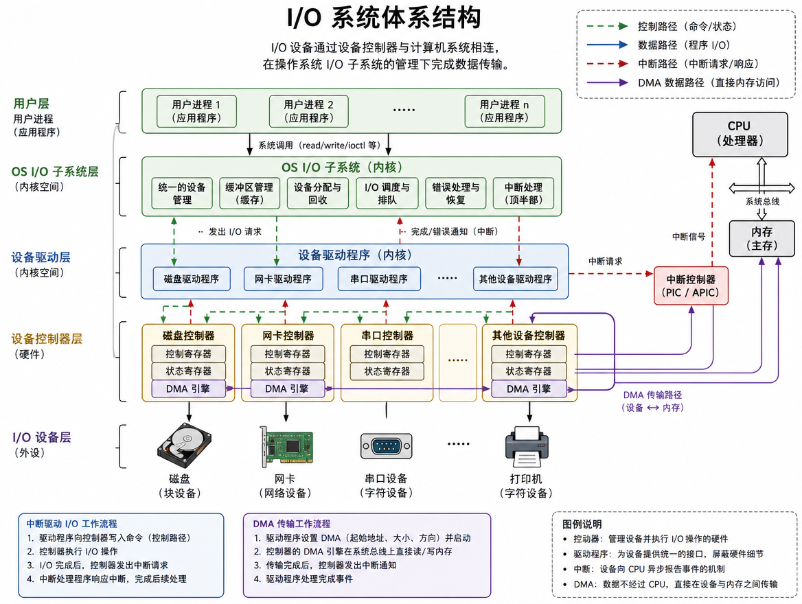
【分值占比】约 4~6 分
【考频】⭐⭐⭐（中等频率，概念题为主）
【必背】
- I/O管理的概念和功能
- I/O控制方式：程序直接控制、中断驱动、DMA、通道
- I/O软件层次结构：用户层、设备独立性软件、设备驱动、中断处理
- 设备独立性的概念和实现
- 缓冲区管理：单缓冲、双缓冲、循环缓冲、缓冲池结构（三类队列、四个工作缓冲区、四种操作）
- SPOOLing技术（假脱机技术）与虚拟设备原理
- 设备分配与回收
【核心概念】
5.1 I/O管理概述
I/O管理的功能： 1. 状态跟踪：跟踪所有I/O设备的状态 2. 设备分配：按策略分配和回收设备 3. 设备控制：控制设备完成I/O操作 4. 缓冲管理：缓和CPU与I/O设备速度不匹配的矛盾 5. 错误处理：处理设备传输中的错误
5.2 I/O控制方式
与计算机组成原理中的I/O方式对应：
| 控制方式 | CPU干预 | 数据传送单位 | 特点 |
|---|---|---|---|
| 程序直接控制 | 持续轮询 | 字/字节 | CPU效率极低 |
| 中断驱动 | 每个数据传送后干预 | 字/字节 | 适合中低速设备 |
| DMA | 仅开始（预处理）和结束（后处理）时 | 数据块 | 适合高速设备 |
| 通道 | 启动及完成一批数据后中断一次 | 一组数据块 | 适合大型系统 |
结论：I/O控制方式的发展目标就是不断减少CPU对I/O的干预，提高系统效率。
DMA 传送过程（三个阶段）： 1. 预处理：CPU 向 DMA 控制器设置传送方向、主存起始地址、传送字数等参数，启动设备 2. 数据传送：DMA 控制器直接控制主存与设备之间的数据块传送，不占用 CPU（以周期窃取方式占用总线） 3. 后处理：整块数据传送完成后，DMA 控制器向 CPU 发中断，CPU 进行校验、唤醒进程等收尾工作
通道类型（按信息交换方式分）： - 字节多路通道：以字节为单位交叉传送，连接多台低速设备（如终端、打印机），轮流为各设备服务 - 数组选择通道：以数据块为单位传送，一次只为一台高速设备服务，独占通道直至传送完成，利用率低 - 数组多路通道：以数据块为单位交叉传送，结合前两者优点，连接多台高速设备并行工作，利用率高
⚠️ 易错警示：字节多路通道传"字节"、数组选择通道"独占"、数组多路通道"块交叉并行"，三者常考区分。
5.3 I/O软件层次结构
┌─────────────────┐
│ 用户层I/O软件 │ ← 用户程序、库函数（如C标准I/O库）
├─────────────────┤
│ 设备独立性软件 │ ← 设备独立性、错误处理、缓冲管理、设备分配
├─────────────────┤
│ 设备驱动程序 │ ← 与硬件直接交互，将上层命令转化为设备指令
├─────────────────┤
│ 中断处理程序 │ ← 响应中断，保存/恢复现场，处理中断
├─────────────────┤
│ 硬件 │ ← I/O设备
└─────────────────┘
数据流向：用户进程的 I/O 请求自上而下逐层传递（用户层 → 设备独立性软件 → 驱动程序 → 中断处理程序 → 硬件）；I/O 完成后的中断则自下而上逐层处理，最终唤醒等待的用户进程。
各层功能详解：
用户层I/O软件：
- 实现与用户交互的接口
- C标准库中的I/O函数（如printf、scanf、fopen等）
- 用户可以直接使用系统调用
设备独立性软件： - 设备独立性：用户程序使用逻辑设备名访问设备，操作系统负责映射到物理设备 - 功能：统一接口、设备命名与映射、设备保护、缓冲管理、错误处理、设备分配与回收
设备驱动程序： - 与具体设备密切相关 - 将上层抽象请求转换为设备能执行的底层操作 - 每个设备类型需要对应的驱动程序
中断处理程序： - 响应设备中断请求 - 完成中断处理，唤醒等待I/O的进程
5.4 设备独立性
设备独立性（设备无关性）： - 用户程序使用逻辑设备名请求I/O - 系统在实际执行时将逻辑设备名映射为物理设备名 - 好处：程序与具体物理设备无关，便于设备分配和灵活性
实现方式——逻辑设备表（LUT）： - 系统设置逻辑设备表（LUT），每个表项包含三项内容：逻辑设备名 → 物理设备名 + 设备驱动程序入口地址 - 进程用逻辑名发出 I/O 请求时，系统查 LUT 找到对应物理设备及其驱动程序，完成映射与调用
⚠️ 易错警示：当 LUT 采用"整个系统一张表"的方式时，独占设备经 LUT 分配必须互斥进行——同一逻辑设备名不能被多个进程同时映射到同一台独占物理设备，否则会破坏独占性；常用做法是为每个用户设一张 LUT（不同用户可用相同逻辑名而不冲突）。
5.5 缓冲区管理
引入缓冲的目的： - 缓和CPU与I/O设备速度不匹配的矛盾 - 减少CPU的中断频率 - 提高CPU与I/O设备之间的并行性
缓冲类型：
| 缓冲类型 | 结构 | 特点 | 每块处理时间 |
|---|---|---|---|
| 单缓冲 | 一个缓冲区 | 设备与CPU不能同时访问同一缓冲区 | $\max(T, C) + M$ |
| 双缓冲 | 两个缓冲区 | 设备与CPU可分别使用不同缓冲区并行 | $\max(T, C + M)$ |
| 循环缓冲 | 多个缓冲区组成环形队列 | 适合输入输出速率相差不大的情况 | — |
| 缓冲池 | 系统公用缓冲池，动态分配 | 利用率高，可供多个进程共享 | — |
其中 $T$ 为设备将数据输入缓冲区的时间，$M$ 为缓冲区与主存（工作区）之间的传送时间，$C$ 为 CPU 处理一块数据的时间。
单缓冲处理时间分析： - 设备向缓冲区输入（$T$）与 CPU 处理上一块（$C$）可以并行，但"缓冲区 → 工作区"的传送（$M$）必须串行插在中间 - 每块平均处理时间为：
$$\max(T,\ C) + M$$
双缓冲处理时间分析： - 设备向缓冲区 A 输入的同时，缓冲区 B 可向工作区传送（$M$）并由 CPU 处理（$C$） - 每块平均处理时间为：
$$\max(T,\ C + M)$$
结论：双缓冲使设备输入与"传送+处理"并行；当 $T \approx C + M$ 时设备与 CPU 利用率都最高。
💡 技巧：两式对比记忆——单缓冲 $M$ 在 max 外面（$\max(T,C)+M$），双缓冲 $M$ 被并进 max 里面（$\max(T,C+M)$），因为双缓冲时传送可与输入并行。
处理 $n$ 个数据块的总时间（流水线通式）：
- 单缓冲：$T$ 与 $C$ 可并行、$M$ 串行，总时间 ≈ $T + M + C + (n-1) \times (\max(T, C) + M)$
- 双缓冲：首块需完整经历 $T + M + C$，其后每块只需 $\max(T, C + M)$，总时间为：
$$T + M + C + (n - 1) \times \max(T,\ C + M)$$
⚠️ 易错警示："$T+M+C$" 是首块的完整流水建立时间，不能漏掉 $M$；也不能简单写成 $n \times \max(\cdot)$，首块没有前块可与之并行。
【例】设磁盘把一块数据输入缓冲区的时间 $T = 80\,\mu s$，将缓冲区数据传送到用户区的时间 $M = 50\,\mu s$，CPU 处理一块数据的时间 $C = 30\,\mu s$。分别计算单缓冲、双缓冲下处理 10 块数据的总时间。
解答要点： 1. 单缓冲：每块 $\max(T, C) + M = \max(80, 30) + 50 = 130\,\mu s$，首块 $T+M+C = 160\,\mu s$，总时间 $= 160 + 9 \times 130 = 1330\,\mu s$ 2. 双缓冲：每块 $\max(T, C + M) = \max(80, 80) = 80\,\mu s$，首块 $T+M+C = 160\,\mu s$，总时间 $= 160 + 9 \times 80 = 880\,\mu s$ 3. 比较：双缓冲因传送与输入重叠，总时间显著缩短
循环缓冲： - 多个缓冲区组成环形队列，设 in（指向下一空缓冲）和 out（指向下一满缓冲）两个指针循环移动 - 适合输入/输出速率相差不大、需持续传输的场合
缓冲池（重点）：
缓冲池由系统统一管理的若干缓冲区组成，按其状态链接成三类队列：
- 空缓冲队列 emq：所有空闲缓冲区
- 输入队列 inq：装满输入数据的缓冲区
- 输出队列 outq：装满输出数据的缓冲区
同时设置四个工作缓冲区：hin（收容输入）、sin（提取输入）、hout（收容输出）、sout（提取输出）。
四种操作（Getbuf / Putbuf 以队列操作实现，需互斥+同步信号量）：
- 收容输入：输入进程从 emq 取空缓冲作 hin，装满数据后挂入 inq
- 提取输入：计算进程从 inq 取满缓冲作 sin，提取数据后挂回 emq
- 收容输出：计算进程从 emq 取空缓冲作 hout，装满输出数据后挂入 outq
- 提取输出：输出进程从 outq 取满缓冲作 sout，输出数据后挂回 emq
🔑 口诀："h 收容、s 提取，in 输入、out 输出"——hin/hout 往里装（收容），sin/sout 往外取（提取）。
💡 缓冲池的优势在于缓冲区由系统公用、动态分配，克服了单/双缓冲为每个设备（进程）专属造成的浪费。
5.6 设备分配与回收
设备分配数据结构： - 设备控制表（DCT）：每个设备一张，记录设备状态 - 控制器控制表（COCT）：每个控制器一张 - 通道控制表（CHCT）：每个通道一张 - 系统设备表（SDT）：记录系统中全部设备
设备分配过程： 1. 根据I/O请求中的逻辑设备名查SDT 2. 查DCT，若设备忙则挂到等待队列 3. 分配控制器（查COCT） 4. 分配通道（查CHCT） 5. 启动设备完成I/O
设备分配方式： - 静态分配：进程运行前分配所有需要的设备，运行期间不变 - 动态分配：进程运行中根据需要动态申请和释放
设备分配算法： - 先来先服务（FCFS）：按请求先后排队，简单公平 - 优先级高者优先：按进程优先级分配，紧迫任务可优先获得设备（与进程调度算法一致）
安全分配与不安全分配： - 安全分配：进程发出 I/O 请求后便阻塞，直到 I/O 完成才被唤醒。优点是设备分配安全、不会死锁（破坏"请求和保持"条件）；缺点是 CPU 与 I/O 串行、效率低 - 不安全分配：进程发出 I/O 请求后可继续运行，还能继续申请其他设备。优点是效率高；缺点是可能发生死锁，分配前需进行安全性检查（如银行家算法思想），仅当分配后系统仍处于安全状态才予分配
⚠️ 易错警示：静态分配破坏了死锁的"请求和保持"条件，可预防死锁；不安全分配虽高效，但必须配合死锁避免机制。
5.7 SPOOLing技术（假脱机技术）
SPOOLing（Simultaneous Peripheral Operations On-Line，外围设备联机同时操作）：
核心思想：以空间换时间——利用磁盘上的输入/输出井模拟脱机输入/输出装置，用一道程序模拟外围控制机，实现虚拟设备。
组成： - 输入井/输出井：磁盘上开辟的区域，暂存输入/输出数据 - 输入缓冲区/输出缓冲区：内存中的缓冲区，暂存井与设备/进程之间传送的数据 - 输入进程/输出进程：模拟脱机外围控制机，负责数据在井与设备之间的传送
工作流程： 1. 输入：数据从设备 → 输入缓冲区 → 输入井；用户进程需要时直接从输入井读 2. 输出：用户进程输出 → 输出井；由输出进程经输出缓冲区 → 设备输出
打印机共享实例（井—缓冲—进程协作）： - 打印机是独占设备，多进程直接争用会混乱。引入 SPOOLing 后，各进程的打印数据先写入输出井形成打印队列 - 输出进程按序从输出井取出数据，经输出缓冲区送打印机打印 - 对用户进程而言，"申请打印机"立即返回成功（实际只是拿到了输出井中的一块空间），独占打印机被改造成多个进程"同时"使用的虚拟共享设备
SPOOLing技术的特点： - 将独占设备改造为共享设备（虚拟设备） - 提高了 I/O 速度：进程以磁盘速度（而非低速设备速度）完成"输入/输出" - 典型应用：打印机的共享
结论：SPOOLing技术是操作系统中实现虚拟设备的核心技术，以磁盘空间换取 I/O 等待时间，最典型的应用就是打印机缓冲池。
【易错警示】
- ❌ 设备驱动程序是与硬件直接交互的一层，不同设备需要不同的驱动程序
- ❌ 设备独立性是设备独立性软件层实现的，不是驱动程序实现的
- ❌ 单缓冲每块时间 $\max(T,C)+M$，双缓冲是 $\max(T,C+M)$，$M$ 的位置不要记反
- ❌ 单缓冲不能实现设备与CPU并行，双缓冲可以
- ❌ 缓冲池是系统公用的，不是某个进程私有的
- ❌ SPOOLing技术需要磁盘空间（输入/输出井），不能在没有磁盘的系统上实现
- ❌ SPOOLing是软件实现的虚拟设备，不是硬件技术
- ❌ 通道是硬件（专门的I/O处理机），不是软件
- ❌ 独占设备经 LUT 分配时必须互斥，否则会破坏设备独占性
【真题速查】
| 年份 | 考点归类 |
|---|---|
| 2024 | I/O层次结构、缓冲区计算 |
| 2023 | SPOOLing、设备独立性 |
| 2022 | 缓冲管理、I/O控制方式 |
| 2021 | 设备分配、双缓冲计算 |
| 2020 | SPOOLing技术、I/O层次 |
| 2019 | 中断处理程序、缓冲区 |
逐题真题：先阅读上方知识点，再按年份展开下列原题；每道题均已对应本章节知识点。
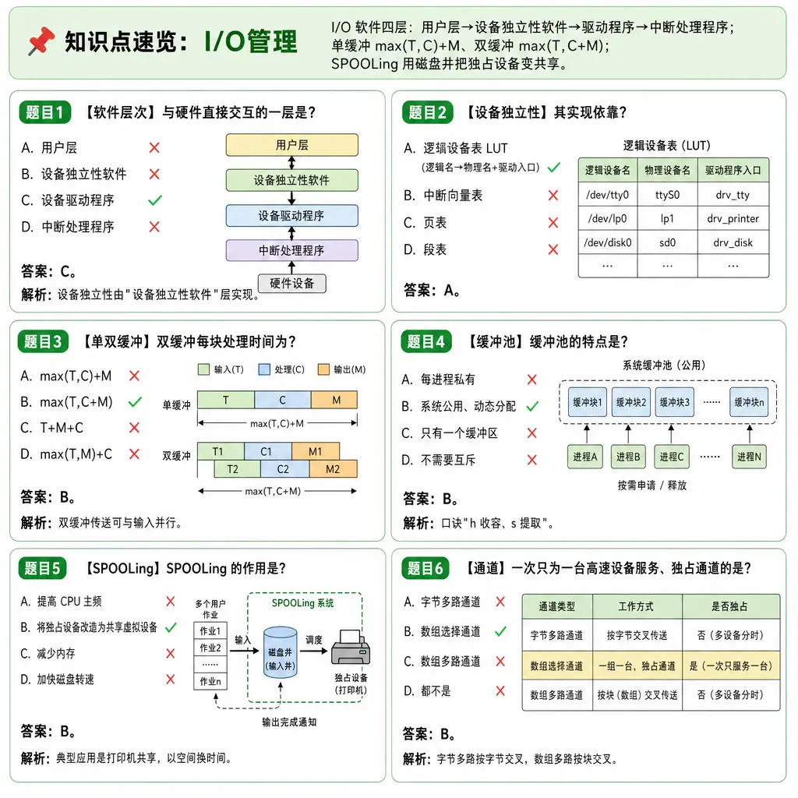
（考点归类供参考，具体题号以历年原卷为准）
操作系统 完